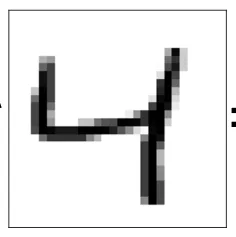
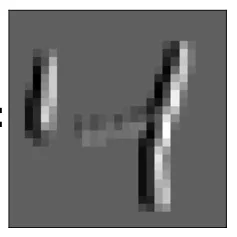
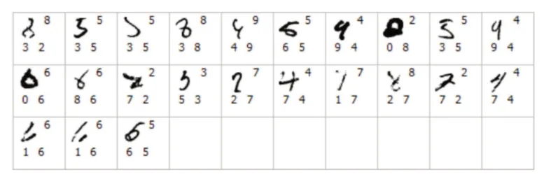
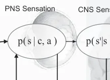
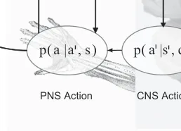
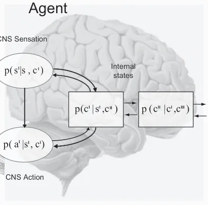

Phần III · Chương 7 — Mạng ánh xạ truyền thẳng
III
Mạng nơ-ron
7 Mạng ánh xạ truyền thẳng
Trong chương này, chúng ta sẽ khám phá khả năng của các mạng nơ-ron cơ bản truyền đầu vào từ một tầng đầu vào qua các tầng nút ẩn khả dĩ đến tầng đầu ra. Chúng ta sẽ chứng minh rằng những mạng nơ-ron như vậy có thể thực hiện các hàm ánh xạ. Các biểu diễn nơ-ron dạng ánh xạ đóng vai trò quan trọng trong nhiều quá trình của não bộ và đã thống trị các mô hình trong khoa học nhận thức dưới dạng perceptron đa tầng. Chúng ta bắt đầu khám phá tác động của việc lựa chọn các giá trị phù hợp cho trọng số synap thông qua các thuật toán học. Mặc dù các mạng truyền thẳng một mình không đủ để giải thích các chức năng nhận thức, nhưng chúng là một thành phần quan trọng của quá trình xử lý thông tin kiểu não bộ và đã đóng góp rất lớn vào hiểu biết của chúng ta về các hệ thống thích nghi. Chương này bao gồm một số ôn tập về các khái niệm học máy và các phát triển gần đây hơn như học sâu. Những kỹ thuật như vậy ngày càng trở nên quan trọng đối với các ứng dụng công nghiệp cũng như việc phân tích dữ liệu khoa học thần kinh. Tuy nhiên, chúng ta sẽ tập trung chủ yếu vào mối liên hệ của chúng với quá trình xử lý thông tin kiểu não bộ.
7.1 Học biểu diễn sâu
Để minh họa khả năng của các mạng được giới thiệu trong chương này, chúng ta sẽ theo dõi một ví dụ về nhận dạng ký tự quang học (OCR). OCR là quá trình quét (quang học) hình ảnh của một ký tự viết tay hoặc in, ví dụ bằng máy ảnh kỹ thuật số, và diễn giải hình ảnh kỹ thuật số này để máy tính ‘hiểu’ được ý nghĩa của nó. Chẳng hạn, nếu chúng ta quét hình ảnh của số 2, thì chúng ta muốn lưu trữ một số nhị phân 00000010 trong máy tính. Số nhị phân này là một biểu diễn tiêu chuẩn để mã hóa số 2 trong Mã Chuẩn Hoa Kỳ để Trao đổi Thông tin (ASCII). Một khi chữ cái được biểu diễn bằng mã này, một chương trình máy tính có thể sử dụng mã đó để suy ra ý nghĩa và thực hiện các tác vụ cụ thể, chẳng hạn như hiển thị biểu diễn của con số trên màn hình máy tính, in con số với các phông chữ khác nhau trên giấy, hoặc tìm kiếm con số này trong một văn bản.
OCR thường là một tác vụ dễ dàng đối với con người và cho đến gần đây, con người thường vượt trội hơn các hệ thống kỹ thuật. Để thảo luận ví dụ này chi tiết hơn, việc phân biệt hai quá trình trong nhận thức một chữ cái là rất hữu ích: cảm nhận vật lý hình ảnh của chữ cái, và gán ý nghĩa cho hình ảnh đó. Trong ví dụ OCR ở trên, điều này tương ứng với một pha quét, chuyển đổi hình ảnh in thành biểu diễn nhị phân của đầu vào cảm giác, và một pha nhận dạng, dựa vào việc biến đổi một biểu diễn cảm giác thành một biểu diễn ngữ nghĩa nơi một ý nghĩa nào đó được gắn vào. Đây về cơ bản là những gì chúng ta đang làm ngay lúc này khi đọc văn bản này. Khi chúng ta đọc một ký tự chẳng hạn như một con số, mỗi ký tự phải được biến đổi từ biểu diễn trên giấy sang một biểu diễn trong não mà não có thể diễn giải được.
Fundamentals of Computational Neuroscience. Third edition. Thomas P. Trappenberg, Oxford University Press. © Oxford University Press 2023. DOI:10.1093/oso/9780192869364.003.0007
Hãy thảo luận ví dụ về việc nhận dạng số ‘2’ viết tay như minh họa ở phía bên trái của Hình 7.1. Bước đầu tiên hướng tới nhận thức chữ cái này là đưa tín hiệu vào não. Điều này được thực hiện bởi một cảm biến quang học gọi là mắt với các tế bào thụ cảm ánh sáng có khả năng chuyển đổi ánh sáng chiếu lên võng mạc thành các tín hiệu được truyền đến não. Chúng ta xấp xỉ quá trình này bằng một võng mạc mô hình số hóa đơn giản hóa chỉ gồm 12 · 12 = 144 tế bào thụ cảm ánh sáng. Mỗi tế bào thụ cảm ánh sáng này truyền một tín hiệu có giá trị 1 nếu vùng được bao phủ bởi thụ thể (trường tiếp nhận của nó) bị hình ảnh che phủ với một tỷ lệ phần trăm nhất định. Bằng cách này, chúng ta thu được phiên bản số hóa của hình ảnh như minh họa ở phía bên phải của Hình 7.1.
Hình 7.1 (Trái) Một phiên bản in của số 2 và (phải) một phiên bản nhị phân của cùng chữ cái đó sử dụng lưới 12 × 12.
Mô hình này chắc chắn là một phép xấp xỉ thô sơ của mắt người. Độ phân giải trong võng mạc người cao hơn nhiều; một võng mạc điển hình có khoảng 125 triệu tế bào thụ cảm ánh sáng. Ngoài ra, các thụ thể trong võng mạc người không phân bố đồng đều như trong ví dụ của chúng ta, mà có mật độ cao nhất ở trung tâm của thị trường gọi là điểm vàng (fovea). Thêm vào đó, ai cũng biết rằng quá trình xử lý tín hiệu tinh vi hơn nhiều diễn ra trong mắt người thông qua một số tầng nơ-ron với các nơ-ron chuyên biệt và mô hình kết nối phức tạp trước khi tín hiệu rời khỏi mắt qua sợi trục của các tế bào hạch. Tuy nhiên, mô hình thô sơ này đơn giản chỉ nhằm minh họa ý tưởng về một biểu diễn cơ bản.
0 1 2 3 4 5 6 7 8 9
Hình 7.2 Một mạng nơ-ron sâu (tương đối) cho bài toán chuẩn nhận dạng chữ số viết tay MNIST.
Một vectơ hoặc mảng đặc trưng cảm giác là đầu vào cần thiết cho bất kỳ hệ thống nhận dạng đối tượng nào. Với đầu vào cảm giác đã cho, chúng ta có thể phát biểu bài toán nhận dạng ký tự như quá trình ánh xạ vectơ đặc trưng cảm giác này thành một vectơ mới biểu diễn ý nghĩa của đối tượng, y dưới dạng f : x ∈Sn
1 →y ∈Sm 2 , (7.1) trong đó n là số chiều của không gian đặc trưng cảm giác (n = 144 trong ví dụ của chúng ta), và m là số chiều của không gian biểu diễn đối tượng ngữ nghĩa (m = 8 nếu chúng ta xét phép biến đổi sang mã ASCII). S1 và S2 là các tập hợp các giá trị khả dĩ cho từng thành phần riêng lẻ của các vectơ. Ví dụ, các thành phần của vectơ có thể bao gồm các giá trị nhị phân (S = [0, 1]), các giá trị rời rạc (S = N), hoặc các giá trị thực (S = R) chẳng hạn như tốc độ phát xung của nơ-ron. Ví dụ OCR của chúng ta là một ánh xạ từ vectơ đặc trưng nhị phân sang vectơ nhị phân của mã ASCII. Hoặc, như được minh họa trong Hình 7.2, có thể là một vectơ với các thành phần mà sự kích hoạt của một thành phần duy nhất sẽ chỉ ra một con số cụ thể như minh họa ở bên phải trong Hình 7.2. Trong não, đây sẽ là mẫu phát xung cảm giác của các nơ-ron võng mạc dẫn đến có thể là các mẫu phát xung của nơ-ron vận động gây ra phản ứng vật lý là phát âm ý nghĩa của con số trực quan đó.
Trong việc triển khai các hàm ánh xạ như vậy, ngày nay người ta thường biến đổi biểu diễn cảm giác thành một chuỗi các biểu diễn trung gian, còn gọi là các biểu diễn ẩn vì các kích hoạt này thường không được quan sát trực tiếp. Tất nhiên, chúng ta có thể quan sát chúng trong các mô phỏng máy tính của mình, hoặc chúng ta có thể đo hoạt động não nếu so sánh các mô hình như vậy với quá trình xử lý của não. Tất nhiên, câu hỏi then chốt là làm thế nào chúng ta tìm thấy các phép biến đổi giữa các biểu diễn. Chúng ta sẽ phác thảo trong chương này cách điều này được thực hiện thông qua việc học các tham số kết nối gọi là trọng số giữa các phần tử của mạng, thứ mà chúng ta phỏng đoán là đại diện cho việc học các kết nối synap giữa các tầng nơ-ron.
Ngày nay, việc sử dụng nhiều tầng ẩn trong các ứng dụng của mạng ánh xạ như vậy, chẳng hạn như trong thị giác máy tính, đã trở nên phổ biến. Đây là lý do tại sao các phương pháp như vậy trong AI ngày nay được gọi là học sâu (deep learning). Việc mở rộng quy mô mạng với nhiều tầng và số lượng lớn nơ-ron ở mỗi tầng đã từng là thách thức trong nhiều năm vì chi phí tính toán của các mô phỏng như vậy tăng lên đáng kể khi kích thước mạng tăng. Hơn nữa, số lượng tham số trong mô hình như vậy cũng tăng lên đáng kể, đòi hỏi phải tăng số lượng mẫu huấn luyện để ngăn ngừa hiện tượng quá khớp (overfitting). Tiến bộ vượt bậc trong vài năm qua là nhờ sự kết hợp của nhiều yếu tố, trong số đó có sự sẵn có của các tập huấn luyện lớn, việc triển khai hiệu quả các mạng như vậy trên Bộ xử lý Đồ họa (GPU), và những tiến bộ trong các kỹ thuật chính quy hóa (regularization) để ngăn ngừa quá khớp. Thành công của học sâu có thể được quy cho thực tế là rất nhiều bài toán có cấu trúc phân cấp vốn có, giống như nhận dạng đối tượng nơi các đối tượng được tạo thành từ việc kết hợp các đặc trưng cơ bản. Một cách hay để nghĩ về học sâu là nó chủ yếu nói về việc học các biểu diễn. Điều này sau đó cho phép một phép biến đổi khó được chia nhỏ thành các phép biến đổi đơn giản hơn như được chỉ ra trong Hình 7.2.
Để thảo luận về cách học biểu diễn và xây dựng một hệ thống nhận dạng, chúng ta bắt đầu với hệ thống nhỏ nhất có thể gọi là perceptron, thứ thậm chí không có tầng ẩn nào. Sau đó chúng ta chuyển sang perceptron đa tầng có các nút ẩn, và cuối cùng tổng quát hóa điều này lên nhiều tầng hơn cũng như các phép toán được sửa đổi đôi chút cho mỗi tầng như thường thấy trong các ứng dụng học sâu. Chuỗi các phép toán tổng quát với những mạng như vậy do đó khá trực tiếp. Mỗi nút nhận ở mỗi tầng lấy một tổ hợp các giá trị kích hoạt của tầng trước đó, hãy gọi chúng là ri,j cho nút thứ j ở tầng i, để xác định giá trị kích hoạt của chúng,
Hàm kích hoạt nơ-ron: ri+1,j = f(ri; w, ). (7.2)
Ví dụ, các mạng cơ bản được thảo luận tiếp theo đơn giản chỉ cộng từng thành phần w1 r out g
Σ
w2 r2 in
Hình 7.3 Nút quần thể đơn giản với hai kênh đầu vào đóng vai trò là một perceptron mô hình cho không gian đặc trưng hai chiều.
hoạt động của các nút trước đó với các giá trị trọng số tương ứng và có thể thêm một tính phi tuyến vào đầu vào ròng này. Đây là hàm kích hoạt của một nơ-ron. Nhiệm vụ chính sau đó là tìm các tham số w sao cho đầu ra thực tế của mạng này rout giống với đầu ra mục tiêu mong muốn rtarget chẳng hạn như được cung cấp bởi một người thầy. Điều này được cung cấp bởi một quy tắc học cho chúng ta biết cách thay đổi các giá trị trọng số trong mỗi bước học:
Quy tắc học: δ∆w = l(w, r, rtarget). (7.3)
Các hàm toán học ở trên chỉ cho thấy hai hàm khá tổng quát mà chúng ta phải xác định chi tiết hơn ở bên dưới. Điểm mấu chốt ở đây chỉ là nhấn mạnh rằng có hai bước để xác định các hoạt động của mạng nơ-ron: một là về cách tính toán sự kích hoạt của các nút, và một là về cách học các tham số. Eduardo Caianiello gọi đây là phương trình nơ-ron (neuronic equation) và phương trình trí nhớ (mnemonic equation) trong bài báo có tầm ảnh hưởng năm 1961 của ông. Chúng ta sẽ chủ yếu sử dụng nút quần thể làm hàm kích hoạt nơ-ron, và sau đây chúng ta sẽ thảo luận một quy tắc gọi là lan truyền ngược lỗi (error-backpropagation) cho quy tắc học, vốn có ảnh hưởng rất lớn trong việc huấn luyện mạng nơ-ron. Trong quy tắc này, sự khác biệt giữa đầu ra thực tế và đầu ra mục tiêu (lỗi) được lan truyền ngược lại phần nào theo chiều nghịch với hàm kích hoạt nơ-ron để thay đổi các giá trị trọng số bằng một quy tắc kiểu Hebb giữa nơ-ron tiền synap và hậu synap. Vào cuối chương, bạn sẽ có thể viết các chương trình có thể nhận dạng chữ số viết tay.
7.2 Perceptron
7.2.1 Perceptron đơn giản như một hàm Boolean
Chúng ta chứng minh trong phần này rằng một nút quần thể, còn gọi là perceptron trong trường hợp của một hệ thống học máy đơn giản này, có thể biểu diễn một số loại hàm vectơ nhất định. Để làm điều này, chúng ta đặt tốc độ phát xung của các kênh đầu vào thành rin i = xi. (7.4)
Nút trong hệ thống perceptron đơn giản này phải có ít nhất n kênh đầu vào, trong đó n là số chiều của không gian đặc trưng. Chúng ta có thể minh họa ý tưởng chung với một nút duy nhất chỉ có hai giá trị đầu vào nhị phân, r1 = x1 và r2 = x2. Một perceptron đơn giản như vậy trong không gian đặc trưng hai chiều sẽ trông giống như hình minh họa trong Hình 7.3. Tốc độ phát xung của đầu ra biểu diễn một hàm Đầu ra của perceptron này
Bảng 7.1 Hàm Boolean AND
x1 x2 y
0 0 1
0 1 0
1 0 0 1 1 1
y y= 1+e-b(x-x0)
1 x x0
Hình 7.4 Hàm logistic fl(x) như một ví dụ về hàm sigmoid. Trong lịch sử, nhiều perceptron cũng sử dụng hàm tanh(x) = 2 ∗flx −1 có liên quan.
có thể biểu diễn giá trị hàm
˜y = rout = g(w1x1 + w2x2; θ), (7.5) trong đó g là một hàm kích hoạt có thể có tham số θ chẳng hạn như ngưỡng phát xung, và w1, w2 là các giá trị trọng số được gán cho mỗi kênh đầu vào. Lưu ý rằng chúng ta có thể dễ dàng mở rộng điều này ra nhiều kênh đầu vào hơn và thậm chí cho các hệ thống có nhiều nút đầu ra, rout = g(wrin; θ). (7.6)
Ở đây chúng ta đã sử dụng ký hiệu ma trận (xem phương trình 6.20).
Để xác định hàm cụ thể mà chúng ta muốn perceptron học, chúng ta phải đưa ra các ví dụ về đầu ra mục tiêu mong muốn của perceptron. Trong trường hợp của một hàm Boolean, chúng ta có thể xác định tất cả các giá trị đầu ra khả dĩ cho mọi tổ hợp trong số nc = 22 = 4 tổ hợp giá trị đặc trưng khác nhau, {(0, 0), (0, 1), (1, 0), (1, 1)}. Một lựa chọn cụ thể của hàm Boolean, đó là hàm Boolean AND, được trình bày trong Bảng 7.1. Để xấp xỉ các giá trị đầu ra khả dĩ này, chúng ta chọn làm hàm độ lợi (gain function) của perceptron là hàm sigmoid (hàm logistic) g(x; β) = 1 1 + e−βx (7.7) như được minh họa trong Hình 7.4.
Tất nhiên, hàm này chỉ cho chúng ta giá trị chính xác 0 hoặc 1 một cách tiệm cận, nhưng chúng ta có thể đơn giản coi một giá trị rout nhỏ hơn 0.5 là số 0 và các đầu ra lớn hơn 0.5 là số 1. Ngoài ra, đây là một phép xấp xỉ khả vi của hàm ngưỡng theo nghĩa là khi tham số β mô tả độ dốc của hàm xung quanh x = 0 tiến tới vô cùng, thì hàm ngưỡng được khôi phục.
Bây giờ chúng ta đã sẵn sàng để nói về việc huấn luyện perceptron. Ý tưởng là chúng ta chọn các số tùy ý cho các giá trị trọng số và sau đó tính toán xem đầu ra của
E(w)
w
Hình 7.5 Minh họa việc cực tiểu hóa lỗi bằng phương pháp hạ gradient trên một bề mặt mất mát (lỗi) một chiều L(w).
perceptron là gì. Sau đó chúng ta có thể so sánh giá trị này với giá trị mục tiêu, đại diện cho đầu vào của người thầy. Việc học như vậy do đó được gọi là học có giám sát (supervised learning). Sự so sánh được định lượng bằng một hàm lỗi, còn gọi là hàm mất mát (loss function) trong tối ưu hóa. Ở đây chúng ta chọn một hàm phổ biến trong các mạng nơ-ron truyền thống, đó là hàm lỗi bình phương trung bình (mean square error),
L(w) = 1 2N
2 y(i) −y(x(i); w)
X
. (7.8) i
N là số lượng các cặp ví dụ (x(i), y(i)) được sử dụng để huấn luyện, và chỉ số trong ngoặc đơn (i) biểu thị chỉ số của ví dụ huấn luyện thứ i để phân biệt với số mũ.
Để tìm các tham số w cực tiểu hóa hàm mất mát (sự khác biệt giữa đầu ra thực tế và đầu ra mong muốn của perceptron), chúng ta sử dụng một kỹ thuật tính toán gọi là hạ gradient (gradient descent). Phương pháp này là một quy trình lặp trong đó chúng ta bắt đầu với các lựa chọn ngẫu nhiên cho các tham số và cải thiện chúng qua từng bước lặp để cho ra các giá trị mất mát nhỏ hơn. Điều này được minh họa trong Hình 7.5 cho trường hợp chúng ta chỉ có một giá trị trọng số. Vì chúng ta thường có nhiều giá trị trọng số, đây thực tế là một hàm nhiều chiều hoặc một bề mặt lỗi. Để tìm cực tiểu của hàm mất mát, chúng ta thay đổi các tham số trọng số dọc theo độ dốc âm của hàm, tức là gradient âm nếu đây là một hàm có nhiều hơn một tham số, wj ←wj −α ∂L
. (7.9)
∂wj
Hằng số α là tốc độ học (learning rate).
Một cách hình thức hơn, để tính gradient trong quy tắc hạ gradient phương trình (7.9), chúng ta phải nhớ lại hai quy tắc từ giải tích, đó là đạo hàm của hàm lũy thừa là d dxxn = nxn−1, (7.10) và đạo hàm của hàm mũ Euler là d dxex = ex, (7.11) có nghĩa là hàm này tại mọi điểm đều bằng chính độ dốc của nó. Cuối cùng chúng ta cần quy tắc dây chuyền d dxf(g(x)) = df dg dx. (7.12) dg
Với các quy tắc này, ta thu được
∂L ∂wj
= 1 (y(i) −y(x(i); w))(−1) ∂y
X
. (7.13)
N
∂wj i
Đạo hàm của mô hình theo các tham số là i wixi = e−P i wixi
∂P i wixi ∂wj
∂y ∂wj
= ∂ ∂wj
1 1 + e−P
. (7.14)
(1 + e−P i wixi)2
Trong đạo hàm còn lại trên tổng, chỉ có số hạng chứa wj là còn tồn tại. Do đó đạo hàm này là xj. Chúng ta cũng có thể viết phần khác của phương trình này theo hàm ban đầu, cụ thể là e−P i wixi i wixi)2 = y(1 −y), (7.15)
(1 + e−P và do đó
∂y ∂wj
= y(1 −y)xj. (7.16)
Bây giờ chúng ta có thể ghép tất cả các phần lại và viết toàn bộ quy tắc cập nhật cho các giá trị trọng số là wj ←wj −α 1 (y(i) −y(x(i); w))y(x(i); w)(1 −y(x(i); w))x(i)j
X
(7.17)
N
i
Phần đầu tiên trong tổng thường được gọi là số hạng delta δ(x(i); w) = (y(i) −y(x(i); w))y(x(i); w)(1 −y(x(i); w)), (7.18) hoặc, nếu viết không kèm các đối số để thấy rõ cấu trúc hơn, nó là δ(i) = (y(i) −y)y(1 −y) (7.19)
Do đó chúng ta có thể viết quy tắc học thành
wj ←wj + α 1
δ(i)(x(i); w)x(i)
X
(7.20) j
N
i
Quy tắc học này được gọi là quy tắc delta vì sự thay đổi của các giá trị trọng số tỷ lệ với hiệu giữa đầu ra mong muốn và đầu ra thực tế thường được biểu diễn dưới dạng số hạng δ, δ = yi −rout i . Đối với một perceptron tuyến tính, tức là perceptron với hàm kích hoạt tuyến tính f(x) = x, điều này đơn giản được cho bởi f ′ = 1. Do đó, sự thay đổi trọng số đối với perceptron tuyến tính là
∆wij = α(yi −rout i )rin j . (7.21)
Quy tắc này, không có đạo hàm của hàm kích hoạt, đã được sử dụng trước đây cho các perceptron ngưỡng và được gọi là quy tắc học perceptron. Vì hàm ngưỡng không khả vi tại ngưỡng, hàm này về mặt hình thức không phải là một quy tắc hạ gradient. Tuy nhiên, hóa ra quy tắc này vẫn hoạt động tốt để huấn luyện perceptron ngưỡng trên các bài toán phân loại đơn giản.
Ngoài ra, hãy lưu ý sự tương đồng của quy tắc học delta với tính dẻo Hebb đã thảo luận trong Chương 6 (phương trình 6.10). Quy tắc học này giờ đây có hai số hạng Hebb. Các trọng số được tăng lên một lượng tỷ lệ với tích của nút tiền synap (giá trị đầu vào) rin j và giá trị hậu synap mong muốn yi. Đây là một số hạng học Hebb có giám sát. Tuy nhiên, các trọng số cũng bị giảm đi bởi tích của giá trị đầu vào rin j và giá trị hậu synap thực tế rout i . Số hạng này giống như việc xóa bỏ (unlearning) phản ứng thực tế của perceptron khi perceptron không đưa ra câu trả lời đúng. Việc học dừng lại khi đầu ra thực tế bằng đầu ra mong muốn, vì số hạng δ khi đó bằng không. Thuật toán của quy tắc delta được tóm tắt với các hàm kích hoạt tổng quát trong Bảng 7.2.
Bảng 7.2 Tóm tắt thuật toán quy tắc delta
Khởi tạo trọng số tùy ý
Lặp lại cho đến khi lỗi đủ nhỏ
Áp một mẫu thử vào các nút đầu vào: r0
i = rin i = ξin i Tính tốc độ phát xung của các nút đầu ra: rout j wijrin i = g(P j )
Tính số hạng delta cho tầng đầu ra: δi = g′(hout i )(ξout i −rout i )
Cập nhật ma trận trọng số bằng cách cộng thêm số hạng: ∆wij = ϵδirin j
Chương trình triển khai perceptron đơn giản bằng Python được đưa ra trong chương trình PerceptronOr.py. Chương trình bắt đầu bằng việc định nghĩa bài toán huấn luyện (tập dữ liệu huấn luyện) trong mảng đặc trưng X và vectơ nhãn mong muốn Y. Các cột của ma trận X tương ứng với vectơ đặc trưng của từng mẫu, và do đó các cột đại diện cho tất cả các mẫu huấn luyện. Sau đó chúng ta giới thiệu và khởi tạo một số biến, cụ thể là số nút đầu vào Ni và nút đầu ra No, ma trận trọng số đến các nút đầu ra wo được khởi tạo ngẫu nhiên, dwo là các thay đổi (gradient) của trọng số, và do là số hạng delta của nút đầu ra.
Programs/PerceptronOr.py 1 import numpy as np 2 import m a t p l o t l i b . pyplot as p l t 3 4 X=np . a r r a y ( [ [ 0 , 0 , 1 , 1 ] , 5 [ 0 , 1 , 0 , 1 ] , 6 [ 1 , 1 , 1 , 1 ] ] ) 7 Y=np . a r r a y ( [ [ 0 , 1 , 1 , 1 ] ] ) 8 9 # model s p e c i f i c a t i o n s 10 Ni =3; No=1; 11 12 # parameter and a r r a y i n i t i a l i z a t i o n 13 N t r i a l s =100 14 wo=np . random . randn (No , Ni ) ; dwo=np . zeros (wo . shape ) 15 e r r o r 1 =np . a r r a y ( [ ] ) 16 e r r o r 2 =np . a r r a y ( [ ] ) 17 18 f o r t r i a l in range ( N t r i a l s ) :
19 y = 1/(1+ np . exp(−wo@X) ) # out put f o r a l l p a t t e r n 20 do = y∗(1−y ) ∗(Y−y ) # d e l t a output 21 # update weights with momentum 22 dwo = 0.9∗dwo+do@X. T 23 wo = wo+0.5∗dwo 24 e r r o r 1 = np . append ( error1 , np . sum ( (Y−y )∗∗2)) 25 e r r o r 2 = np . append ( error2 , np . sum(1−( abs (Y−y ) <0.1))) 26 27 p l t . p l o t ( e r r o r 1 ) ; p l t . p l o t ( e r r o r 2 / 4 )
Một ví dụ về đường cong học tập nơi chúng ta hiển thị hiệu tuyệt đối giữa đầu ra mong muốn và đầu ra thực tế của mạng được thể hiện ở bên trái Hình 7.6 bằng đường màu xanh lam. Nhìn chung, lỗi ngày càng nhỏ đi, cho thấy quá trình học đang diễn ra. Tuy nhiên, lỗi không chạm tới 0. Điều này xuất phát từ thực tế là chúng ta sử dụng hàm sigmoid chỉ tiệm cận giá trị 1. Tuy nhiên, chúng ta có thể đưa vào một bước hậu xử lý khác trong đó chúng ta áp dụng hàm ngưỡng. Điều này tương ứng với lỗi mà chúng ta tính toán trong chương trình trên. Đường cong học tập tương ứng được hiển thị bằng màu cam trên đồ thị bên trái trong Hình 7.6. Điều này chứng minh rằng perceptron này có thể giải quyết hàm Boolean OR với bước hậu xử lý này. Hàm lỗi chẳng hạn như hàm mất mát dùng để huấn luyện phần nào hữu ích vì nó cho thấy có sự tiến bộ liên tục trong quá trình học ngay cả khi giá trị đã qua ngưỡng vẫn giữ nguyên, mặc dù bản thân các giá trị này không kể hết toàn bộ câu chuyện. Các giá trị đã qua ngưỡng cho chúng ta một số chỉ dấu về việc có bao nhiêu mẫu được nhận dạng, nhưng sẽ tốt hơn nếu kiểm tra riêng từng mẫu, điều mà chúng ta đã lược bỏ để giữ cho chương trình ngắn gọn. Việc luôn tính toán các con số lỗi có thể diễn giải được theo hiệu suất mà người dùng đang tìm kiếm là rất hữu ích, điều này không nhất thiết phải là hàm mất mát được sử dụng cho hạ gradient.
Số lần lặp (SGD)
0 100 200 300 400
4
Sai khác qua ngưỡng
Sai khác tuyệt đối
Sai khác tuyệt đối
0.8
0.6
3
0.6
0.4
2
0.4
0.2
1
0.2
0
0.0
0.0
0 25 50 75 100 Số lần lặp (theo lô)
0 25 50 75 100 Số lần lặp
Hình 7.6 Đường cong học tập của perceptron sigmoid được huấn luyện trên hàm Boolean OR. Đồ thị ở phía bên trái cho thấy đường cong học tập cho học theo lô (batch learning). Đường màu xanh lam cho thấy sai khác tuyệt đối giữa đầu ra mong muốn và kích hoạt sigmoid của nút đầu ra. Đường màu cam cho thấy sai khác qua ngưỡng. Đồ thị bên phải so sánh đường cong học theo lô (xanh lam) từ đồ thị bên trái với đường cong học SGD (đỏ).
Chúng ta đã thảo luận về học theo lô (batch) so với học trực tuyến (online) trong trường hợp tuyến tính và có lẽ nên ôn lại điều này một lần nữa đối với lan truyền ngược. Ở đây chúng ta đã suy ra quy tắc học dựa trên lỗi bình phương trung bình trên tất cả các điểm huấn luyện. Điều này tương ứng với việc áp dụng tất cả các ví dụ huấn luyện và tính toán gradient trung bình
Bảng 7.3 Hàm Boolean XOR
x1 x2 y
0 0 1
0 1 0
1 0 0
1 1 1
trước khi cập nhật các giá trị trọng số dựa trên giá trị trung bình này. Đây là huấn luyện theo lô (batch training), vì chúng ta sử dụng toàn bộ lô ví dụ huấn luyện cho mỗi bước cập nhật trọng số. Ngược lại, chúng ta sử dụng từng ví dụ huấn luyện một tại một thời điểm, (x(i), y(i)), tính gradient cho điểm này, và sử dụng gradient này để cập nhật giá trị trọng số sau khi áp dụng từng điểm dữ liệu. Đây là một phương pháp học trực tuyến vì mục đích là sử dụng từng điểm dữ liệu đến cho một lần cập nhật và không cần lưu trữ bất cứ thứ gì. Tất nhiên, trong thực tế chúng ta muốn thực hiện nhiều lần lặp nên chúng ta phải giữ lại từng điểm huấn luyện. Trong phần triển khai dưới đây, chúng ta chọn một mẫu ngẫu nhiên từ các mẫu huấn luyện. Nếu các mẫu huấn luyện là ngẫu nhiên, thì phương pháp này là hạ gradient ngẫu nhiên (stochastic gradient descent - SGD). Một ví dụ về đường cong học tập như vậy được hiển thị dưới dạng đường màu đỏ trong đồ thị bên phải của Hình 7.6.
Ưu điểm hoặc nhược điểm của các phương pháp khác nhau là gì? Thuật toán theo lô đảm bảo rằng lỗi huấn luyện trung bình giảm xuống. Vì vậy nếu chúng ta vẽ đường cong này và thấy lỗi huấn luyện tăng lên, chúng ta biết chắc chắn phải có điều gì đó sai sót. Ngược lại, khi chúng ta thay đổi trọng số dựa trên ví dụ huấn luyện cuối cùng, người ta dự đoán rằng hiệu suất của các điểm huấn luyện khác sẽ trở nên tệ hơn và chúng ta cần giảm nhịp độ của tốc độ học. Lưu ý rằng ở đây chúng ta chỉ hiển thị các đường cong hiệu suất trên tập huấn luyện. Tất nhiên, chúng ta phải nghiên cứu khả năng tổng quát hóa (generalization), điều khó thể hiện trong một ví dụ kích thước nhỏ như thế này.
Như thường lệ trong học máy, các phương pháp khác nhau sẽ hoạt động khác nhau trong các tình huống khác nhau. Tuy nhiên, ngày nay việc có các tập dữ liệu lớn là phổ biến, nơi cách tiếp cận trực tuyến phù hợp hơn. Ngoài ra, có những lợi ích của SGD ở chỗ cách tiếp cận này tạo ra các đường đi ngẫu nhiên qua không gian trọng số, điều có thể giúp tránh các cực tiểu địa phương hoặc các vùng nông. Điều này thậm chí còn quan trọng hơn trong trường hợp phi tuyến vì trường hợp tuyến tính tương ứng với một bài toán tối ưu hóa lồi không có cực tiểu địa phương. Một lần nữa, ngày nay với các tập dữ liệu lớn, người ta thường sử dụng các lô nhỏ (mini-batches). Điều này sẽ giúp ích trong quá trình xử lý bằng cách giữ một tập dữ liệu nhỏ hơn trong bộ nhớ trước khi nạp các lô nhỏ mới. Trong mỗi lô nhỏ, chúng ta vẫn có thể học theo cách theo lô hoặc SGD.
7.2.2 Perceptron đa tầng (MLP)
Bây giờ hãy xét hàm XOR, hàm này có y = 1 nếu cả hai đối số giống nhau và bằng 0 nếu ngược lại như trình bày trong Bảng 7.3.
Thật thú vị khi thử học trường hợp này bằng chương trình perceptron vì điều này dường như không hoạt động. Thật vậy, hàm này không thể học được bởi perceptron vì hàm XOR không khả tách tuyến tính (linearly separable). Điều này đã dẫn đến sự suy tàn của perceptron vào những năm 1970 mặc dù rõ ràng là các perceptron tinh vi hơn với nhiều tầng có thể giải quyết bài toán này. Frank Rosenblatt đã bắt đầu xây dựng những mạng như vậy từ các mô hình nơ-ron đơn giản và viết một cuốn sách về chúng. Ông thậm chí đã bắt đầu xây dựng các máy tính nơ-ron dựa trên các perceptron như vậy và huấn luyện chúng tương tự như thuật toán được trình bày dưới đây. Có vẻ như do cái chết sớm của Rosenblatt và sự phản đối mạnh mẽ của Marvin Minsky đối với perceptron mà nhiều nhà nghiên cứu trong lĩnh vực này đã bị thuyết phục rằng việc học gặp vấn đề với các cấu trúc phức tạp hơn này. Do đó, perceptron đa tầng chỉ trở nên phổ biến trở lại khi việc huấn luyện hiệu quả được tái khám phá và phổ biến vào năm 1986 bởi Rumelhart, Hinton, và Williams.
x
1 y
1
2 x y n m x o w w h
Hình 7.7 Kiến trúc tiêu chuẩn của một mạng truyền thẳng đa tầng với một tầng ẩn, trong đó các giá trị đầu vào được phân phối đến tất cả các nút ẩn với các hệ số trọng số được tổng hợp trong ma trận trọng số wh. Các giá trị đầu ra của các nút thuộc tầng ẩn được truyền đến tầng đầu ra, một lần nữa được nhân tỷ lệ bởi các giá trị độ mạnh kết nối được xác định bởi các phần tử trong ma trận trọng số wo.
Bây giờ chúng ta sẽ xem xét các mạng gồm các nơ-ron sigmoid đơn giản để xây dựng thứ thường được gọi là mạng nơ-ron nhân tạo vì perceptron về cơ bản chỉ là một nơ-ron. Trước tiên chúng ta sẽ xem xét một cấu trúc mạng như minh họa trong Hình 7.7. Mạng có một tầng gồm m nút đầu vào, một tầng gồm h nút ẩn, và một tầng gồm n nút đầu ra. Tầng đầu vào chỉ đơn thuần biểu diễn các giá trị đầu vào, trong khi tầng ẩn và tầng đầu ra thực hiện các phép tính tích cực đã xác định trước đó với nơ-ron perceptron (phương trình 7.7). Thuật ngữ nút ẩn xuất phát từ thực tế là các nút này không có kết nối với thế giới bên ngoài như các nút đầu vào và đầu ra. Mạng là một biểu diễn đồ họa của một hàm phi tuyến có dạng y = g(wog(whx)). (7.22)
Rất dễ để đưa thêm nhiều tầng ẩn hơn vào công thức này. Ví dụ, quy tắc kích hoạt cho đầu ra của một mạng bốn tầng với ba tầng ẩn và một tầng đầu ra có thể được viết là y = g(wog(wh3g(wh2g(wh1x)))), (7.23) trong đó mỗi tầng sử dụng cùng một hàm kích hoạt. Hãy thảo luận một trường hợp đặc biệt của mạng ánh xạ đa tầng trong đó tất cả các nút ở tất cả các tầng ẩn đều có hàm kích hoạt tuyến tính (g(x) = x). Phương trình 7.23 khi đó đơn giản hóa thành y = wowh3wh2wh1x
= ˜wx. (7.24)
Ở bước cuối cùng, chúng ta đã sử dụng thực tế là phép nhân của một chuỗi các ma trận đơn giản chỉ tạo ra một ma trận khác, mà chúng ta ký hiệu là ˜w. Phương trình 7.24 biểu diễn một mạng một tầng như đã thảo luận trước đó. Do đó, việc đưa vào các hàm kích hoạt phi tuyến, ít nhất là ở các tầng ẩn, là thiết yếu để tận dụng các lợi thế tính toán của các tầng ẩn mà chúng ta sắp thảo luận. Lưu ý rằng cũng có thể xây dựng các mạng đa dạng hơn, chẳng hạn như bằng cách bao gồm các kết nối giữa các tầng ẩn khác nhau, không chỉ giữa các tầng liên tiếp như minh họa trong Hình 7.7. Tuy nhiên, cấu trúc phân tầng cơ bản là đủ cho các thảo luận sau đây và chúng ta sẽ quay lại điểm này sau trong cuốn sách.
Vì perceptron không thể biểu diễn một số hàm Boolean nhất định, bây giờ chúng ta nên hỏi những hàm nào có thể được xấp xỉ bởi perceptron đa tầng. Câu trả lời về nguyên tắc là bất kỳ hàm nào. Một mạng truyền thẳng đa tầng là một bộ xấp xỉ hàm vạn năng (universal function approximator). Điều này có nghĩa là, với đủ số nút ẩn, bất kỳ hàm ánh xạ nào cũng có thể được xấp xỉ với độ chính xác tùy ý bởi các mạng này. Mặc dù điều này có thể được chứng minh một cách hình thức, nhưng cũng rất dễ hiểu tại sao lại như vậy. Mỗi nút ẩn thêm vào một nhân tố khác với các tham số tự do riêng của nó vào hàm được biểu diễn bởi mạng. Ví dụ, bằng cách kết hợp hai nút sigmoid có trọng số đối ngược nhau và độ dịch khác nhau, người ta có thể xây dựng một hàm cục bộ giống như hàm được hiển thị ở bên trái trong Hình 7.8. Với những hàm cục bộ như vậy, có thể điều chỉnh kích thước và vị trí của phần nhô lên, người ta có thể xây dựng các hàm phi tuyến tùy ý với độ chính xác nhiều như mong muốn.
y y x x
Hình 7.8 Trái: Một hàm cơ sở dưới dạng hàm sigmoid. Hàm bên phải được tạo thành từ hàm cơ sở chỉ bằng cách cộng các bản sao đã được co giãn, dịch chuyển và phản chiếu của hàm cơ sở.
Các vấn đề còn lại liên quan đến việc biết chúng ta cần bao nhiêu nút ẩn, và tìm ra các giá trị phù hợp cho các trọng số. Ngoài ra, đặc tính xấp xỉ tổng quát không cho chúng ta biết liệu sử dụng nhiều tầng ẩn hơn hay chỉ tăng số lượng nút trong một tầng ẩn sẽ tốt hơn. Đây là những mối quan tâm quan trọng đối với các ứng dụng kỹ thuật thực tế của những mạng đó. Những câu hỏi này liên quan đến sự đánh đổi độ chệch–phương sai (bias-variance tradeoff) vì nhiều nút hơn sẽ làm tăng độ phức tạp của mô hình và do đó có thể làm tăng khả năng phương sai cao (quá khớp), trong khi quá ít số hạng có khả năng gây ra độ chệch (dưới khớp - underfitting).
Để huấn luyện các mạng này, chúng ta xét lại việc cực tiểu hóa MSE. Quy tắc học khi đó được cho bởi hạ gradient trên hàm lỗi này, j −α ∂E wl j ←wl , (7.25)
∂wl j với l ∈{h, o}.
Cụ thể, gradient của hàm lỗi MSE theo các trọng số đầu ra được cho bởi
∂E ∂wo
= 1
2 ∂ ∂wo
(y(k) −y)2
X
ij ij k
= 1
2 ∂ ∂wo
2 y(k) −g(wog(whx(k)))
X
ij k (7.26)
Hãy gọi kích hoạt của các nút ẩn là yh, yh = g(whx). (7.27)
Khi đó chúng ta có thể tiếp tục với đạo hàm của mình như sau,
∂E ∂wo
= 1
2 ∂ ∂wo
2 y(k) −g(woyh)
X
ij ij k g′(whx(k))(y(k)
X
i −yi)yh
= − j k
= δo i yh j , (7.28)
Phương trình 7.28 chính là quy tắc delta như đã trình bày trước đó vì chúng ta mới chỉ xét tầng đầu ra. Việc tính toán gradient theo các trọng số của tầng ẩn một lần nữa đòi hỏi quy tắc dây chuyền vì chúng nằm sâu hơn trong hàm lỗi. Do đó chúng ta phải tính đạo hàm
∂E ∂wh
= 1
2 ∂ ∂wh (y(k) −y)2
X
ij ij k
= 1
2 ∂ ∂wh
2 y(k) −g(wog(whx(k)))
X
. (7.29) ij k
Sau một hồi vật lộn với các chỉ số (điều có thể dễ dàng tránh được với các chương trình tính toán giải tích như MAPLE hoặc MATHEMATICA), chúng ta có thể viết đạo hàm dưới dạng tương tự như đạo hàm của tầng đầu ra, cụ thể là
∂E ∂wh
= δh i xj, (7.30) ij khi chúng ta định nghĩa số hạng delta của số hạng ẩn là
X
i = gh′(hin δh wo ikδo i ) k. (7.31) k
Số hạng lỗi δh
i được tính từ số hạng lỗi của tầng đầu ra bằng một công thức trông tương tự như công thức cập nhật tổng quát của mạng, ngoại trừ việc một tín hiệu đang lan truyền từ tầng đầu ra về tầng trước đó. Đây là lý do tại sao thuật toán này được gọi là thuật toán lan truyền ngược lỗi (error-backpropagation).
Bảng 7.4 Tóm tắt thuật toán lan truyền ngược lỗi
Khởi tạo trọng số tùy ý
Lặp lại cho đến khi lỗi đủ nhỏ
Áp một mẫu thử vào tất cả các nút đầu vào: xi Lan truyền đầu vào qua mạng bằng cách tính tốc độ phát xung của ijyl−1 các nút ở các tầng kế tiếp l: yl j wl i = g(P j )
Tính số hạng delta cho tầng đầu ra:
i = g′(yo−1 δo i )(ydesired i −yo i ) Lan truyền ngược các số hạng delta qua mạng:
δl−1 i = g′(yl−1 j wl jiδl i ) P j Cập nhật ma trận trọng số bằng cách cộng thêm số hạng: ∆wl iyl−1 ij = αδl j
Trong phép suy diễn này, chúng ta đã sử dụng MSE trên tất cả các mẫu huấn luyện. Vì tất cả các mẫu huấn luyện được sử dụng cùng một lúc, thuật toán này một lần nữa là một thuật toán theo lô. Sử dụng thuật toán theo lô nhìn chung là một ý tưởng hay, nhưng nó cũng chiếm nhiều bộ nhớ với các tập huấn luyện lớn và chúng ta đã đề cập rằng một phiên bản trực tuyến khi các điểm dữ liệu mới xuất hiện theo thứ tự ngẫu nhiên có thể giúp tránh các cực tiểu địa phương. Đây được gọi là hạ gradient ngẫu nhiên. Phiên bản trực tuyến của thuật toán này được tóm tắt trong Bảng 7.4. Thuật toán này thường được áp dụng cho từng lô nhỏ ngẫu nhiên tại một thời điểm.
Việc triển khai perceptron đa tầng cơ bản bằng Python cho bài toán XOR được minh họa trong chương trình MLPxor.py. Như đã thảo luận trong phần triển khai perceptron đơn giản trước đây, chương trình bắt đầu bằng việc định nghĩa bài toán huấn luyện (tập dữ liệu huấn luyện) trong mảng đặc trưng X và vectơ nhãn mong muốn Y. Sau đó chúng ta giới thiệu và khởi tạo một số biến, giờ đây bao gồm kích hoạt của các nút ẩn h và các trọng số đến các nút ẩn wh, cũng như gradient dwh và số hạng delta dh tương ứng. Sau đó chúng ta lặp qua các lần thử. Ở đây chúng ta triển khai phiên bản theo lô trong đó chúng ta lan truyền tiến tất cả các mẫu từ tập huấn luyện và cập nhật trọng số. Đoạn mã này rất gọn nhẹ, sử dụng ký hiệu ma trận. Nhìn chung, việc nghĩ về các tầng của mạng nơ-ron để thực hiện các phép toán chẳng hạn như xây dựng tích vô hướng giữa vectơ đầu vào và ma trận trọng số là rất hữu ích. Cách phát biểu gọn nhẹ này giúp ích rất nhiều trong việc xây dựng các mô hình phức tạp.
Programs/MLPxor.py 1 #MLP f o r the xor f u n c t i o n 2 import numpy as np 3 import m a t p l o t l i b . pyplot as p l t 4 5 X=np . a r r a y ( [ [ 0 , 0 , 1 , 1 ] , 6 [ 0 , 1 , 0 , 1 ] , 7 [ 1 , 1 , 1 , 1 ] ] ) 8 Y=np . a r r a y ( [ [ 1 , 0 , 0 , 1 ] ] ) 9 10 # model s p e c i f i c a t i o n s 11 Ni =3; Nh=4; No=1; 12 13 # parameter and a r r a y i n i t i a l i z a t i o n 14 N t r i a l s =1000 15 wh=np . random . randn (Nh , Ni ) ; dwh=np . zeros (wh . shape ) 16 wo=np . random . randn (No , Nh ) ; dwo=np . zeros (wo . shape )
17 e r r o r =np . a r r a y ( [ ] ) 18 19 f o r t r i a l in range ( N t r i a l s ) : 20 h =1/(1+ np . exp(−wh@X) ) # hidden a c t i v a t i o n f o r a l l p a t t e r n 21 y =1/(1+ np . exp(−wo@h) ) # outpu t f o r a l l p a t t e r n 22 23 do=y∗(1−y ) ∗(Y−y ) # d e l t a output 24 dh=h∗(1−h ) ∗(wo . t r a n s p o s e ( )@do) # d e l t a backpropagated 25 26 # update weights with momentum 27 dwo=0.9∗dwo+do@h . T 28 wo=wo+0.1∗dwo 29 dwh=0.9∗dwh+dh@X. T 30 wh=wh+0.1∗dwh 31 32 e r r o r =np . append ( e r r o r , np . sum ( abs (Y−y ) ) ) 33 p l t . p l o t ( e r r o r )
Một ví dụ về đường cong học tập nơi chúng ta hiển thị sai khác tuyệt đối giữa đầu ra mong muốn và đầu ra thực tế của mạng xuất hiện ở bên trái của Hình 7.9, trong khi ở bên phải là lỗi khi sử dụng hậu xử lý ngưỡng như chúng ta đã làm với perceptron. Điều này chứng minh rằng MLP có thể giải quyết hàm Boolean XOR.
Sai khác tuyệt đối > 0.1
Sai khác tuyệt đối
Số lần lặp
Số lần lặp
Hình 7.9 Đường cong học tập của một MLP được huấn luyện trên hàm Boolean XOR. Đồ thị ở phía bên trái cho thấy đường cong học tập của sai khác tuyệt đối giữa đầu ra mong muốn và kích hoạt sigmoid của nút đầu ra. Đồ thị bên phải cho thấy một ví dụ về hiệu suất khi chúng ta sử dụng giá trị làm tròn của nút đầu ra làm dự đoán.
7.2.3 MNIST với MLP
Hầu hết các kỹ thuật perceptron đa tầng đã được biết đến ít nhất là từ cuối những năm 1960, mặc dù chúng chỉ được công nhận rộng rãi hơn vào giữa những năm 1980. Mặc dù vào thời điểm đó có rất nhiều sự phấn khích, việc mở rộng quy mô các mạng này lên các kích thước bài toán lớn hơn trong thực tế lại khó khăn hơn dự kiến. Ví dụ, khi chỉ đơn giản thay thế mẫu XOR ở trên bằng tập dữ liệu MNIST hóa ra lại khó huấn luyện. Một vấn đề khác khi huấn luyện mạng sâu hơn nữa, các MLP với nhiều tầng ẩn hơn, là vấn đề tiêu biến gradient (vanishing gradient) đã được Sepp Hochreiter và Jürgen Schmidhuber nhận ra. Bản chất của vấn đề này là các gradient có thể trở nên rất nhỏ, chẳng hạn như ở các phần đuôi của hàm sigmoid, và việc lan truyền ngược các gradient nhỏ như vậy càng làm loãng chúng hơn nữa. Giải pháp của họ đã dẫn Schmidhuber và Hochreiter đến đề xuất Bộ nhớ Ngắn-Dài hạn (LSTM) sẽ được thảo luận thêm trong Chương 9. Ở đây chúng ta sẽ chỉ đơn giản cho thấy vấn đề phần nào được giảm bớt bằng cách sử dụng hàm độ lợi tuyến tính chỉnh lưu rò rỉ (leaky-rectified-linear), x if x > 0 0.1 otherwise (7.32) g(x) = thay vì hàm sigmoid. Mặc dù hàm này khả vi tại x = 0 (theo nghĩa một phía), chúng ta có thể đơn giản lấy đạo hàm một phía tại điểm này. Hơn nữa, chúng ta cũng sẽ thay đổi hàm đầu ra thành một hàm phù hợp hơn cho phân loại đa lớp xác suất. Đầu tiên chúng ta yêu cầu vectơ đầu ra được chuẩn hóa sao cho tổng các phần tử vectơ bằng một.
y ← exp(y) P exp(y). (7.33)
Chúng ta sẽ thấy điều này phù hợp khi xem xét phân loại trong một khuôn khổ xác suất. Chúng ta sẽ thảo luận thêm về điều này trong Mục 7.4. Ở đó chúng ta cũng sẽ chỉ ra rằng entropy chéo âm (negative cross-entropy)
Y (j) log y(j) (7.34)
X
L =
j là phù hợp cho phân loại. Đạo hàm của hàm mất mát này cũng đơn giản, dL dy = Y −y. (7.35)
Cuối cùng, một khía cạnh rất quan trọng của việc áp dụng phương pháp gradient là sử dụng một dạng ngẫu nhiên nào đó trong quá trình để tránh các cực tiểu địa phương hoặc các vùng nông trên bề mặt mất mát. Một cách đơn giản và thanh lịch là sử dụng các lô nhỏ ngẫu nhiên trong quá trình học. Nghĩa là, chúng ta chỉ lấy một số lượng nhất định các ví dụ huấn luyện ngẫu nhiên cho mỗi bước gradient. Phương pháp hạ gradient ngẫu nhiên (SGD) này đã trở thành tiêu chuẩn cho ứng dụng thực tế của các mạng nơ-ron nhân tạo và học sâu như vậy. Một chương trình ví dụ bao gồm các thay đổi này cho ví dụ MNIST được đưa ra dưới đây.
Programs/MNISTmlp.py 1 import numpy as np 2 import m a t p l o t l i b . pyplot as p l t 3 import pandas as pd 4 5 df = pd . r e a d c s v ( ’ mnist 784 . csv ’ ) 6 X = df . i l o c [ : , 0 : 7 8 4 ] . valu es /255 7 Y1 = df . i l o c [ : , 7 8 4 ] . values 8 9 Y=np . zeros ( ( 1 0 , 7 0 0 0 0 ) ) 10 f o r i in range (7 0 00 0 ) : Y[Y1[ i ] , i ]=1 11 X=np . append (X. T , np . a r r a y ( [ np . ones ( 7 0 0 0 0 ) ] ) , a x i s =0) 12
13 14 # model s p e c i f i c a t i o n s 15 Ni =785; Nh=128; No=10 16 17 # parameter and a r r a y i n i t i a l i z a t i o n 18 N t r i a l s =100 19 wh=np . random . randn (Nh , Ni ) ; dwh=np . zeros (wh . shape ) 20 wo=np . random . randn (No , Nh ) ; dwo=np . zeros (wo . shape ) 21 e r r o r =np . a r r a y ( [ ] ) 22 23 f o r t r i a l in range ( N t r i a l s ) : 24 i =np . random . permutation ( range (1 000)) 25 f o r batch in range ( 1 0 ) : 26 Xtrain =X[ : , batch ∗100:( batch +1)∗100] 27 Ytrain =Y[ : , batch ∗100:( batch +1)∗100] 28 29 h=wh@Xtrain ; h=np . where ( h <0 ,0.1∗h , h ) 30 y=np . exp (wo@h) ; y=y / np . sum ( y , 0 ) 31 do =( Ytrain−y ) 32 dh=wo .T@do 33 34 # update weights with momentum 35 dwo=0.9∗dwo+do@h . T 36 wo=wo+0.001∗dwo 37 dwh=0.9∗dwh+dh@Xtrain . T 38 wh=wh+0.001∗dwh 39 40 e r r o r =np . append ( e r r o r , np . sum ( abs ( Ytrain−y ) ) ) 41 p l t . p l o t ( e r r o r )
7.2.4 MLP với Keras
Mặc dù chúng ta đã triển khai MLP từ đầu để giải thích tất cả các chi tiết của mô hình, nhưng hiện nay có rất nhiều gói phần mềm giúp việc triển khai chúng trở nên đơn giản hơn nhiều. Ví dụ, gói Python có tên sklearn là một thư viện học máy toàn diện, dễ sử dụng và chứa nhiều quy trình hữu ích, bao gồm cả perceptron đa tầng. Đây là một thư viện hữu ích để khám phá vì nó chứa nhiều quy trình phân tích dữ liệu hiện đại. Mặc dù chúng ta sẽ không đi sâu thêm vào thư viện này ở đây, chúng ta sẽ chuyển thẳng sang một thư viện gọi là Keras được phát minh để cung cấp các quy trình học sâu theo phong cách sklearn. Thư viện này hữu ích vì nó có thể chạy các chương trình với sự trợ giúp của bộ xử lý đồ họa (GPU) giúp tăng tốc đáng kể quá trình xử lý các mô hình như vậy. Thật vậy, GPU thường là yếu tố thiết yếu cho học sâu vì kích thước của các mô hình cho các ứng dụng nâng cao thường được áp dụng cho các tập dữ liệu lớn. GPU là các bộ xử lý được tối ưu hóa cho các phép toán mảng chẳng hạn như các phép toán tạo đồ họa. Hầu hết các phép toán của chúng ta xung quanh mạng nơ-ron đều có thể tận dụng các bộ xử lý chuyên dụng này vì mạng nơ-ron dựa trên các phép toán ma trận hoặc tensor, bao gồm phép cộng, phép nhân và phép tích chập mà chúng ta sẽ thảo luận thêm dưới đây. Thật vậy, phần thảo luận và triển khai mạng nơ-ron tích chập bên dưới là một động lực khác để giới thiệu thư viện này ở đây.
Hãy thảo luận ví dụ cơ bản về một mạng sâu trong Keras. Một mạng nơ-ron sâu ở đây đơn giản là một mạng có nhiều tầng. Chúng ta có thể sử dụng điều này để cuối cùng quay lại ví dụ về nhận dạng chữ số viết tay. Cụ thể, chúng ta sẽ sử dụng cơ sở dữ liệu MNIST (Modified National Institute of Standards and Technology) nổi tiếng vốn đã thúc đẩy rất nhiều sự phát triển trong học sâu. Tập dữ liệu bao gồm các mẫu số hóa của các số viết tay từ 0 đến 9. Mỗi hình ảnh bao gồm 28*28 điểm ảnh. 14 ví dụ đầu tiên từ tập dữ liệu này được hiển thị trong Hình 7.10.
Hình 7.10 14 ví dụ đầu tiên từ tập dữ liệu MNIST các chữ số viết tay.
Một mạng gồm 6 tầng như đã phác thảo ở đầu Chương này trong Hình 7.2 được triển khai trong chương trình MLPmnist.py. Phần đầu tiên của chương trình liên quan đến việc chuẩn bị dữ liệu ở định dạng phù hợp chẳng hạn như tập hợp tất cả các điểm ảnh trong hình ảnh thành một vectơ lớn có kích thước 784 (= 28*28) và co giãn nó về khoảng [0, 1]. Sau này chúng ta sẽ thảo luận tại sao việc chuẩn hóa như vậy lại hữu ích. Ngoài ra, chúng ta chuyển các nhãn thành biểu diễn 1-hot, là vectơ có độ dài bằng số lớp với các số 0 ở tất cả các thành phần ngoại trừ vị trí chỉ ra nhãn của lớp này. Ví dụ, với ba lớp chúng ta có thể có 1 →[1, 0, 0], 2 →[0, 1, 0], 3 →[0, 0, 1]. Chúng ta có thể sử dụng hàm to categorical() của Keras cho mục đích này.
Programs/MNISTmlpKeras.py 1 import numpy as np 2 import m a t p l o t l i b . pyplot as p l t 3 from keras import models , l a y e r s , optimizers , d a t a s e t s , u t i l s 4 5 6 ( x t r a i n , y t r a i n ) , ( x t e s t , y t e s t ) = d a t a s e t s . mnist . l o a d d a t a ( ) 7 8 x t r a i n = x t r a i n . reshape (60000 , 784)/255 9 x t e s t = x t e s t . reshape (10000 , 784)/255 10 y t r a i n = u t i l s . t o c a t e g o r i c a l ( y t r a i n , 10) 11 y t e s t = u t i l s . t o c a t e g o r i c a l ( y t e s t , 10) 12 13 i n p u t s = l a y e r s . Input ( shape =(784 ,)) 14 x = l a y e r s . Dense (128 , a c t i v a t i o n = ’ r e l u ’ ) ( i n p u t s ) 15 x = l a y e r s . Dense (128 , a c t i v a t i o n = ’ r e l u ’ ) ( x ) 16 x = l a y e r s . Dense (128 , a c t i v a t i o n = ’ r e l u ’ ) ( x ) 17 x = l a y e r s . Dense (128 , a c t i v a t i o n = ’ r e l u ’ ) ( x ) 18 x = l a y e r s . Dense (128 , a c t i v a t i o n = ’ r e l u ’ ) ( x ) 19 o u t p u t s = l a y e r s . Dense (10 , a c t i v a t i o n = ’ softmax ’ ) ( x ) 20 21 model = models . Model ( i n p u t s = inputs , o u t p u t s = o u t p u t s ) 22 23 model . compile ( l o s s = ’ c a t e g o r i c a l c r o s s e n t r o p y ’ , 24 o p t i m i z e r = ’Nadam ’ , m e t r i c s =[ ’ accuracy ’ ] ) 25
26 h i s t o r y =model . f i t ( x t r a i n , y t r a i n , 27 b a t c h s i z e =128 , 28 epochs =10 , 29 v a l i d a t i o n d a t a =( x t e s t , y t e s t ) ) 30 score = model . e v a l u a t e ( x t e s t , y t e s t ) 31 p r i n t ( ’ Test l o s s : ’ , score [ 0 ] , ’ Test accuracy : ’ , score [ 1 ] )
Phần thú vị ở đây là cách mạng nơ-ron có thể được đặc tả trong Keras. Keras cung cấp hai cách chính để đặc tả mô hình, một cách gọi là mô hình tuần tự (sequential model) bị giới hạn ở các mô hình thuần túy tuần tự với một đầu vào và một đầu ra duy nhất, và mô hình hàm (functional model) tổng quát hơn có thể dùng để lắp ráp các mô hình phức tạp hơn. Ký hiệu mô hình hàm không khó hơn nhiều và thậm chí còn hợp lý hơn một chút nên chúng ta sẽ sử dụng chế độ này ngay lập tức. Một mô hình hàm trong Keras được đặc tả bằng cách chỉ định một đầu vào chung, sau đó chỉ định các hàm cho các tầng và kết nối chúng bằng cách chỉ định các đầu vào riêng lẻ của chúng, và cuối cùng gom thành một mô hình duy nhất bằng cách gọi hàm Model() trong đó chúng ta chỉ định đầu vào và đầu ra của toàn bộ mô hình. Lưu ý rằng một hàm có hai cặp dấu ngoặc đơn, như Dense()(), có nghĩa là hàm thứ nhất trả về một hàm, sau đó hàm này được gọi với danh sách đối số thứ hai.
MLP được đặc trưng bởi một tầng kết nối đầy đủ (fully connected layer) nơi mỗi nơ-ron của tầng trước được kết nối với mọi nơ-ron ở tầng nhận. Các tầng như vậy ngày nay thường được gọi là tầng dày đặc (dense layers). Chúng ta phải chỉ định hàm kích hoạt cho mỗi tầng nếu nó không tuyến tính, ở đây là hàm tuyến tính chỉnh lưu (relu) xi if xi > 0 0 otherwise (7.36) g(xi) = ngoại trừ tầng cuối cùng có hàm kích hoạt là hàm softmax g(xi) = e−xi P j e−xj . (7.37)
Mô hình phải được biên dịch, điều này là cần thiết để chương trình được chuẩn bị cho việc thực thi trên GPU nếu có sẵn. Hầu hết các ví dụ trong cuốn sách này được chuẩn bị đủ nhỏ để không cần đến GPU. Trong bước biên dịch, chúng ta chỉ định hàm mất mát nào sẽ sử dụng, bộ tối ưu hóa (optimizer) nào chúng ta sẽ dùng, và cả thước đo nào chúng ta dùng để đánh giá kết quả. Tất nhiên, chúng ta sẽ phải thảo luận chi tiết hơn về các lựa chọn này, nhưng hiện tại chúng ta muốn cho thấy rằng những mạng như vậy với các lựa chọn phổ biến này có thể hoạt động tốt một cách đáng kinh ngạc. Thông thường mô hình đơn giản này đạt độ chính xác trên tập kiểm tra khoảng 98% trên tập dữ liệu MNIST. Ngược lại, một Máy vectơ hỗ trợ (SVM) tương đương, vốn là một phương pháp phổ biến trước thời kỳ học sâu, đạt khoảng 91% trên tập dữ liệu MNIST.
Hiệu suất của mô hình sau khi học là quan trọng đối với chúng ta. Tuy nhiên, việc theo dõi hiệu suất của mô hình trong quá trình học cũng rất bổ ích và quan trọng đối với việc phát triển mô hình. Chúng ta gọi các đồ thị như vậy là đường cong học tập (learning curves). Chúng ta có thể vẽ các loại đường cong khác nhau, hoặc được đánh giá trên tập huấn luyện hoặc được đánh giá trên tập thẩm định (validation set). Rất dễ vẽ các đường cong như vậy trong Keras vì hàm fit đã bao gồm lịch sử đánh giá dưới dạng một hàm gọi lại (callback function), và Keras cung cấp khuôn khổ để tự viết hàm gọi lại của riêng bạn. Các khuôn khổ học sâu khác cũng thường bao gồm cách trực quan hóa tiến trình trong khi học. Trong đoạn mã trên, chúng ta đã gán con trỏ trả về của hàm fit cho biến danh sách từ điển history. Hàm key() liệt kê tên các khóa cho các giá trị được bao gồm, cho ra đồ thị như trong Hình 7.11. Chúng ta có thể thấy rằng độ chính xác thẩm định khá ổn định quanh mức 0.975, trong khi độ chính xác huấn luyện đang tăng lên, điều này có thể là dấu hiệu của hiện tượng quá khớp. Hành vi của các đường cong như vậy rất hữu ích để quan sát khi phát triển mô hình. Nó có thể cung cấp một số giá trị chẩn đoán khi mô hình không học đúng cách.
0.98 độ chính xác
0.96
0.94 huấn luyện kiểm tra
0.92
0 2 4 6 8 epoch
Hình 7.11 Ví dụ về các đường cong học tập. Đường chấm xanh lam tương ứng với độ chính xác trên dữ liệu huấn luyện, trong khi đường nét liền màu đỏ tương ứng với độ chính xác trên dữ liệu thẩm định.
7.2.5 Một số nhận xét về học bằng gradient và tính hợp lý sinh học của MLP
MLP đã dạy cho chúng ta nhiều bài học về xử lý mạng chẳng hạn như học biểu diễn và khả năng thực hiện các hàm ánh xạ phức tạp của chúng. Những bài học này dường như vô giá khi xem xét chức năng của não bộ. Tuy nhiên, việc tranh luận về tính hợp lý sinh học phụ thuộc rất nhiều vào ngữ cảnh và cấp độ mà các mô hình này hướng tới. Ví dụ, một số người đã chỉ trích MLP là không thực tế về mặt sinh học vì các nơ-ron phát xung và do đó có hàm đáp ứng nhị phân. Tuy nhiên, như chúng ta đã lập luận trong Chương 5, các nơ-ron mô hình ở đây có thể được mô tả chính xác hơn là mô hình hóa một quần thể nơ-ron. Tuy nhiên, khi đó lại có một số sự không chắc chắn về việc diễn giải các trọng số mà chúng ta thường đồng nhất với hiệu lực synap.
Đã có những cuộc tranh luận đang diễn ra về tính hợp lý sinh học của việc học lan truyền ngược lỗi nếu quá trình huấn luyện này nhằm mục đích mô hình hóa động lực học của việc học sinh học dựa trên tính dẻo synap. Việc lan truyền ngược các tín hiệu lỗi dường như khó thực hiện trong các mạng vỏ não. Mặc dù một số hình thức trao đổi thông tin giữa nơ-ron hậu synap và tiền synap là khả dĩ, việc sử dụng rộng rãi các cơ chế như vậy để lan truyền ngược lỗi qua toàn bộ mạng dường như đầy thách thức. Ví dụ, một nơ-ron sẽ phải thu thập các lỗi được lan truyền ngược từ tất cả các nút khác mà nó chiếu tới. Điều này không chỉ làm nảy sinh các vấn đề đồng bộ hóa, mà còn có nhược điểm đối với quá trình xử lý song song thực sự trong hệ thống. Việc đưa các số hạng đạo hàm vào tín hiệu delta cũng gây ra vấn đề. Việc lan truyền ngược các số hạng đạo hàm không chính xác có thể nhanh chóng dẫn đến việc cập nhật sai lệch các trọng số trong mạng. Cuối cùng, người ta vẫn chưa giải quyết được làm thế nào một pha lan truyền tiến của tín hiệu có thể được tách biệt hiệu quả khỏi pha lan truyền ngược của tín hiệu lỗi. Tuy nhiên, cũng có một số đề xuất về cách một thuật toán như vậy có thể được triển khai về mặt sinh học theo những cách khác nhau. Điều này trải dài từ các điện thế hoạt động lan truyền ngược đến các cấu hình mạng gồm các kết nối phản hồi mà về nguyên tắc sẽ đạt được sự lan truyền ngược lỗi. Bất kể việc triển khai sinh học trực tiếp như thế nào, bản thân giá trị của việc có thể tìm ra lời giải cho một bài toán ánh xạ đã là một đóng góp quan trọng giúp xây dựng các mô hình mạng chức năng, bất kể khả năng tìm ra lời giải bằng các phương pháp khác nhau.
Tuy nhiên, sự thận trọng khi áp dụng các mô hình MLP để khớp dữ liệu khoa học thần kinh cũng rất quan trọng. Chúng ta đã đề cập ở trên rằng các mạng ánh xạ truyền thẳng là các bộ xấp xỉ hàm vạn năng, điều này đòi hỏi sự thận trọng khi diễn giải chúng trong khoa học thần kinh tính toán. Ví dụ, trong các thí nghiệm, chúng ta thường đo một hàm đáp ứng nào đó như một hàm của một số tham số được kiểm soát bằng thực nghiệm. Một mạng ánh xạ đa tầng, với tư cách là bộ xấp xỉ vạn năng, sẽ có thể xấp xỉ mọi hàm như vậy tốt một cách tùy ý với sự lựa chọn tham số phù hợp trong mạng. Khi các mạng như vậy được sử dụng để khớp dữ liệu thực nghiệm, người ta có thể bị cám dỗ để tuyên bố rằng các hệ thống này đại diện cho các mô hình của não bộ, trên cơ sở rằng các nút xử lý trong mạng giống với nơ-ron. Việc chỉ có thể khớp một số mối quan hệ thực nghiệm do đó có thể có giá trị khoa học hạn chế. Một mô hình tốt sẽ làm sáng tỏ các lời giải thích khả dĩ, và giá trị giải thích của một mô hình do đó là điều luôn phải ghi nhớ.
Trong thực tế, cũng có nhiều thách thức khi áp dụng các mô hình mạng nơ-ron lớn để khớp dữ liệu. Người ta thừa nhận rộng rãi rằng tối ưu hóa hạ gradient đơn giản có thể bị mắc kẹt trong các cực tiểu địa phương và có những phương pháp tiên tiến hơn. Điều này bao gồm việc sử dụng các số hạng động lượng (momentum) cho gradient nhằm lưu giữ một phần ký ức về các lần cập nhật trước đó. Điều này cũng bao gồm các số hạng đạo hàm bậc cao hơn có thể xấp xỉ tốt hơn các đa tạp tối ưu hóa phi tuyến. Các kỹ thuật chính quy hóa ngày càng trở nên quan trọng cùng với kích thước ngày càng tăng của các mô hình mạng, và nhiều kỹ thuật khác đã đóng vai trò công cụ giúp các mạng sâu có thể áp dụng vào các ứng dụng công nghiệp. Lĩnh vực học máy này rất năng động, và một số nguồn cảm hứng từ và cho khoa học thần kinh đã được rút ra. Tuy nhiên, chúng ta sẽ tiếp tục tập trung vào việc minh họa các nguyên lý cơ bản của khoa học thần kinh tính toán.
7.3 Mạng nơ-ron tích chập (CNN)
7.3.1 Nhận dạng đối tượng bất biến
Con người có khả năng nhận dạng các đối tượng ngay cả khi chúng thay đổi về hình dạng, kích thước, vị trí và góc nhìn, v.v. Ví dụ, hãy cầm một chiếc cốc và di chuyển nó trước mắt bạn, xoay nó hoặc nhìn nó từ các khoảng cách khác nhau. Việc nhận ra chiếc cốc không phụ thuộc một cách cốt yếu vào các điều kiện quan sát. Mặc dù chúng ta đã thấy rằng các hệ thống nơ-ron có thể học cách nhận dạng đối tượng thông qua học có giám sát trong các mạng ánh xạ, nhưng các quá trình nhận dạng như vậy khá nhạy cảm với những thay đổi trong vectơ đầu vào, và những thay đổi về điều kiện quan sát chiếc cốc dẫn đến các mẫu kích hoạt rất khác nhau trên võng mạc. Do đó, nhận dạng đối tượng bất biến từ lâu đã làm đau đầu cả các nhà khoa học thần kinh lẫn các kỹ sư. Việc giải quyết nhận dạng đối tượng bất biến có thể đạt được trong các mạng phân cấp.
Phần lớn não người tham gia vào quá trình xử lý thị giác ở một mức độ nào đó, và nghiên cứu thị giác là một lĩnh vực mạnh mẽ trong khoa học thần kinh. Ở đây chúng ta phác thảo ngắn gọn một giả thuyết về cách nhận dạng đối tượng bất biến đạt được trong con đường thị giác bụng (ventral visual pathway) của não bộ (xem phần thảo luận về con đường cái gì và ở đâu trong Mục 10.1.2). Kunihiko Fukushima đã đề xuất những mô hình nhận dạng đối tượng bất biến như vậy từ năm 1979, một mạng nơ-ron nhân tạo phân cấp, đa tầng được thúc đẩy từ việc nghiên cứu hệ thống thị giác của khỉ. Ở đây chúng ta phác thảo ngắn gọn mô hình sinh lý hơn có tên là VisNet theo đề xuất của Edmund Rolls, Simon Stringer và các cộng sự trước khi thảo luận về các hiện thân phổ biến của mạng bất biến với mạng nơ-ron tích chập đã được Yann LeCun và các đồng nghiệp phát triển.
A. Con đường thị giác bụng B. Các bản đồ vỏ não phân tầng
Tầng 4
Tầng 4
50
Vỏ não thái dương dưới
Vùng thái dương
Kích thước trường tiếp nhận / độ
20
Phía sau
Tầng 3
Tầng 3
8.0
V4
Đồi thị }
3.2
V2
Vỏ não chẩm
Tầng 2
Tầng 2
1.3
V1
LGN
Tầng 1 Tầng 1
50 20 8.0 3.2 1.3 0
Độ lệch tâm / độ
Hình 7.12 (A) Minh họa sự gia tăng kích thước trường tiếp nhận trong con đường thị giác bụng. (B) Mô hình phân tầng có tên VisNet của con đường thị giác bụng, bao gồm các tầng cạnh tranh trong đó mỗi nút ở một tầng được kết nối với một vùng hạn chế các nút ở tầng trước đó [chỉnh sửa từ Stringer and Rolls, Neural Networks 21: 888–903 (2008), và các tài liệu tham khảo trong đó].
Các cấp độ phân cấp trong con đường thị giác bụng được phác thảo trong Hình 7.12A. Sau một số tiền xử lý các mẫu thị giác ở võng mạc, nơi các chức năng quan trọng được thực hiện chẳng hạn như thích nghi với độ sáng, các mẫu được ánh xạ vào nhân gối ngoài (LGN) của đồi thị, vốn là đích đến chính của các dây thần kinh thị giác từ mắt. Sau đó, tín hiệu đến vỏ não thị giác sơ cấp V1, và rồi được truyền đến các vùng vỏ não cao hơn. Trong VisNet, các vùng này thường được gắn với V2, và sau đó là các vùng ở vỏ não thái dương sau và thái dương dưới. Do đó, VisNet được biểu diễn với bốn tầng vỏ não, như minh họa trong Hình 7.12B. Một thành phần cốt yếu của mô hình là mỗi nút ở một tầng được kết nối với một vùng hạn chế về mặt không gian gồm các nút ở tầng bên dưới. Hệ quả là, trường tiếp nhận của các nút, tức là vùng của thị trường mà chúng có thể đáp ứng, tăng lên theo từng cấp độ. Các trường tiếp nhận ở vỏ não thái dương dưới rất lớn và bao phủ hiệu quả toàn bộ thị trường.
Mỗi tầng trong mô hình là một bản đồ cạnh tranh, nơi sự cạnh tranh được thực hiện thông qua việc điều chỉnh ngưỡng phát xung của các nút cho đến khi đạt được độ thưa (sparseness) xác định trước ở mỗi tầng, như đã thảo luận trong Mục 8.5.1. Mô hình được huấn luyện trên các chuỗi mẫu từ chuyển động của đối tượng trong thị trường, chẳng hạn như phép tịnh tiến hoặc phép xoay của đối tượng. Trọng số giữa các tầng được điều chỉnh bằng học Hebb tỷ lệ với sự kích hoạt của hoạt động tiền và hậu synap. Các phiên bản đầu của mô hình sử dụng một dạng học Hebb với quy tắc vết (trace rule), trong đó một phần ký ức trong hoạt động nơ-ron (vết) được dùng cho các thay đổi trọng số Hebb. Các quy tắc như vậy sử dụng các liên kết thời gian giữa các đối tượng chuyển động. Tuy nhiên, các mô phỏng gần đây cũng cho thấy kết quả tương tự có thể đạt được mà không cần vết khi các đối tượng trong các bước thời gian liên tiếp có sự chồng lấn nhất định với các biểu diễn nơ-ron trước đó. Các quy tắc này do đó sử dụng các liên kết không gian. Các mô phỏng đã chỉ ra rằng VisNet có khả năng học nhận dạng đối tượng bất biến, bao gồm bất biến đối với phép tịnh tiến, phép xoay và kích thước. Các nghiên cứu gần đây cũng cho thấy nhiều đối tượng có thể được huấn luyện đồng thời. VisNet chứng minh rõ ràng cách một mạng cạnh tranh phân cấp với kích thước trường tiếp nhận tăng dần và các biểu diễn trừu tượng hóa tăng dần tương ứng, từ biểu diễn dựa trên hình ảnh ban đầu đến biểu diễn dựa trên đối tượng sau này, có thể đạt được nhận dạng đối tượng bất biến. Vì đây là một kiến trúc phổ biến của quá trình xử lý vỏ não, kết quả cũng sẽ đúng đối với các phương thức cảm giác khác.
7.3.2 Xử lý ảnh và các bộ lọc tích chập
Trong học sâu, việc sử dụng thêm các tầng với các tham số được học cho phép học các đặc trưng phân cấp. Việc tăng số lượng tầng đã cho phép ứng dụng thành công các mạng nơ-ron vào các bài toán phức tạp hơn. Các mô hình với hàng chục hoặc thậm chí hàng trăm tầng hiện nay không còn hiếm gặp. Câu hỏi đặt ra khi đó là làm thế nào chúng ta có thể làm cho các mạng nơ-ron có khả năng mở rộng quy mô vì nó không chỉ tốn nhiều thời gian máy tính hơn để xử lý các mô hình, mà còn làm tăng nhu cầu về các ví dụ huấn luyện để học số lượng tham số ngày càng tăng của các mô hình phức tạp hơn. Một nhóm các cải tiến mà chúng ta có thể thực hiện là tích hợp sẵn một số giả định vào kiến trúc mạng của chúng ta. Ở đây chúng ta thảo luận một trường hợp đặc biệt quan trọng, đó là tích hợp sẵn tính bất biến vị trí của các đặc trưng. Theo nghĩa này, chúng ta muốn nói rằng việc nhận dạng một chữ số trong hệ thống OCR của chúng ta không nên phụ thuộc vào vị trí mà ký tự được trình bày trong thị trường của chúng ta. Ngược lại, nếu chúng ta có một vectơ đặc trưng chẳng hạn như các giá trị chỉ ra các xét nghiệm y tế cụ thể như huyết áp hoặc mức đường huyết, thì vị trí con số liên quan được ghi nhận trong vectơ đặc trưng lại rất quan trọng.
Đối với phần thảo luận sau đây, việc nhận ra rằng các nơ-ron có thể đại diện cho các bộ phát hiện hoặc bộ lọc cho các đặc trưng cụ thể là rất hữu ích, nghĩa là các nơ-ron trở nên kích hoạt tối đa đối với các mẫu đầu vào cụ thể. Điều này dễ dàng được hiểu trong các ứng dụng thị giác. Hầu hết các thành công trong mạng nơ-ron sâu đã được chứng minh với xử lý ảnh và liên quan đến mạng nơ-ron tích chập. Trong phần này, trước tiên chúng ta sẽ ôn lại một phép toán quan trọng gọi là tích chập (convolution) trước khi tích hợp nó vào các cấu trúc mạng truyền thẳng của chúng ta. Chúng ta sẽ thảo luận lại điều này với ví dụ về các chữ số viết tay MNIST.
Hãy bắt đầu bằng việc định nghĩa phép toán gọi là tích chập cho một tín hiệu rời rạc 1 chiều,
T X
f(t′)s(t + t′). (7.38)
(f ∗s)(t) = t′=0
Ở đây chúng ta đã sử dụng ký hiệu t cho biến chạy vì phép toán này thường được áp dụng cho chuỗi thời gian. Tất nhiên, đây chỉ là một ký hiệu và chúng ta có thể chọn bất kỳ chữ cái nào mình thích. Công thức này mô tả cách áp dụng một bộ lọc f vào một tín hiệu s(t). Giả sử chúng ta có một tín hiệu được cho bởi t = 0 1 2 3 4 5 6 7 8 9 s = 0 0 0 0 0 1 1 1 1 1
Hãy tích chập tín hiệu này với một bộ lọc nhỏ f = [−1, 1]. Điều này được thực hiện bằng cách đặt bộ lọc lên phần đầu tiên của vectơ, sau đó nhân các phần tử tương ứng với nhau, rồi cộng các phần tử kết quả lại để tính phần tử đầu tiên của hình ảnh đã lọc. Trong trường hợp của chúng ta, giá trị này là (f ∗s)(0) = f(0)∗s(0)+f(1)∗s(1) = 0. Sau đó chúng ta thực hiện một phép tính tương tự bắt đầu tại vị trí thứ hai của tín hiệu, (f ∗s)(0) = f(1) ∗s(1) + f(2) ∗s(2) = 0. Nếu chúng ta áp dụng bộ lọc cho tất cả các vị trí bắt đầu khả dĩ của tín hiệu ban đầu, chúng ta thu được vectơ chín thành phần cho hình ảnh đã lọc (f ∗s) = [0, 0, 0, 0, 1, 0, 0, 0, 0]. Nếu chúng ta chỉ áp dụng bộ lọc cho mỗi phần tử thứ hai làm vị trí bắt đầu, thì chúng ta sẽ thu được tín hiệu đã lọc là (f ∗s) = [0, 0, 1, 0, 0]. Việc dịch chuyển bộ lọc đi một giá trị nhất định được gọi là bước nhảy (stride). Sử dụng bộ lọc với bước nhảy khác 1 sẽ tạo ra các tín hiệu bị nén. Dù sao đi nữa, điều thú vị cần lưu ý là tín hiệu đã lọc kết quả cho bộ lọc ví dụ cụ thể này thực sự đang trích xuất sự thay đổi trong tín hiệu ban đầu.
Lưu ý rằng tín hiệu đã lọc ngay cả với bước nhảy bằng 1 cũng có ít hơn một vị trí so với vectơ ban đầu. Điều này là do bộ lọc chúng ta sử dụng có hai thành phần nên tôi chỉ có thể áp dụng bộ lọc đến vị trí áp chót để không vượt quá giới hạn của vectơ tín hiệu ban đầu. Có một số thủ thuật để buộc tín hiệu đã lọc có cùng kích thước với tín hiệu ban đầu. Ví dụ, chúng ta có thể chỉ cần thêm một giá trị tùy ý s=0 vào thời điểm sau phần tử cuối cùng. Các giá trị đã lọc khi đó tất nhiên hơi bị thiên lệch một chút, nhưng đôi khi việc giữ nguyên kích thước lại rất tiện lợi. Điều này được gọi là đệm không (zero padding). Ngoài ra, chúng ta có thể lặp lại các giá trị từ đầu tín hiệu, được gọi là đệm tuần hoàn (periodic padding). Dù thế nào đi nữa, đây chỉ là một số thủ thuật kỹ thuật.
Trước khi tiếp tục, việc đưa ra một vài nhận xét kỹ thuật về lựa chọn định nghĩa tích chập cụ thể của chúng ta là phù hợp. Ở đây chúng ta đã sử dụng một định nghĩa tích chập phổ biến trong học máy. Trong kỹ thuật, một định nghĩa thay thế phổ biến của tích chập rời rạc một chiều là
T X
Định nghĩa thay thế: (f ∗s)(t) = 1
f(t′)s(t −t′). (7.39)
T
t′=0
Trong ký hiệu này, bộ lọc bị đảo ngược (lật lại) so với định nghĩa ban đầu của chúng ta ở trên. Trong giới học máy, dấu cộng hiện nay dường như là cách phổ biến nhất để phát biểu phép tích chập, và bởi vì sau này chúng ta dù sao cũng học các giá trị của bộ lọc, phần định nghĩa này không ảnh hưởng đến kết quả. Chúng ta cũng đã đưa vào một số phép chuẩn hóa hợp lý hơn trong định nghĩa này, vốn thường là một ý tưởng hay. Tuy nhiên, điều này chỉ thêm một hằng số chuẩn hóa tổng thể vào các phép toán tích chập mà có thể được hấp thụ trong quá trình học khi chúng ta sử dụng các phép toán như vậy trong một mạng có thể huấn luyện được. Do đó, định nghĩa đơn giản hóa của chúng ta dường như phù hợp hơn trong phạm vi ứng dụng của chúng ta. Cuối cùng, chúng ta cũng có thể biểu diễn phép tích chập cho tín hiệu liên tục về mặt toán học là f(t′)x(t + t′)dt′. (7.40)
(f ∗x)(t) =
−∞
Một hàm giống như bộ lọc xuất hiện trong tích phân như trên được gọi về mặt toán học là một hàm hạt nhân (kernel function).
Rất trực tiếp để tổng quát hóa phép tích chập cho dữ liệu n chiều. Về mặt toán học, một phép tích chập n chiều hoàn chỉnh có thể được viết là
Z ∞
Z ∞
f(x′
1, ..., x′ n)g(x1 −x′
1, ..., xn −x′ n)dx′
1...dx′ n, (f ∗g)(x1, ..., xn) =
...
−∞
−∞ (7.41) trong đó chúng ta đã sử dụng chữ cái g cho tín hiệu. g ở đây là một mảng n chiều. Một cấu trúc n chiều như vậy với các quy tắc phép toán tương ứng được gọi về mặt toán học là một tensor. Ví dụ, một tensor ba chiều sẽ là một khối lập phương, và việc tích chập chúng với một tensor ba chiều (khối lập phương) khác sẽ tạo ra một tensor ba chiều (khối lập phương) khác. Trường hợp hai chiều rời rạc có thể được viết là
U X
V X
f(u′, v′)g(u + u′, v + v′). (7.42)
(f ∗g)(u, v) = u′=0 v′=0
Ở đây chúng ta đã sử dụng danh pháp u và v cho các tọa độ của tín hiệu. Các chữ cái này thường được dùng cho không gian điểm ảnh của máy ảnh kỹ thuật số. Trong phép toán tích chập này, chúng ta đặt góc trên bên trái của bộ lọc f tại một vị trí (u, v) của hình ảnh g, nhân các thành phần chồng lấn với nhau, và sau đó cộng các giá trị kết quả để thu được giá trị cho vị trí (u, v) của hình ảnh đã lọc.
Hiện nay các gói phần mềm thường đã có sẵn các hàm triển khai cho phép toán tích chập. Điều hữu ích cần lưu ý là hầu hết các triển khai đều dựa trên định lý tích chập, phát biểu rằng tích chập của hai tensor trở thành phép nhân từng điểm trong không gian Fourier. Do đó, trước tiên người ta áp dụng FFT (Biến đổi Fourier Nhanh) cho các tensor, nhân các kết quả theo từng điểm, và sau đó sử dụng FFT nghịch để thu được tích chập tương ứng.
Hãy áp dụng tích chập để lọc các hình ảnh MNIST của chúng ta. Cụ thể, hãy áp dụng một bộ lọc 2 × 2 với các số –1 ở cột bên trái và các số 1 ở cột bên phải, −1 1
−1 1
Tích chập kết quả được hiển thị trong Hình 7.13. Như có thể thấy, bộ lọc này làm nổi bật các cạnh dọc. Cụ thể hơn, giá trị màu xám ở đó chỉ ra rằng không có cạnh nào. Các điểm ảnh tối hơn cho thấy nơi có sự chuyển tiếp từ giá trị nhỏ hơn sang giá trị thang xám cao hơn trong ảnh gốc, trong khi điểm ảnh sáng hơn chỉ ra nơi có sự chuyển tiếp theo chiều ngang giữa giá trị cao hơn và nhỏ hơn trong ảnh gốc. Các cạnh ngang bị triệt tiêu, mặc dù chúng ta có thể thiết kế một bộ lọc tương tự cho các cạnh ngang hoặc thậm chí các chuyển tiếp phức tạp hơn.
Tất nhiên, bộ lọc của chúng ta rất nhỏ và chỉ hiển thị các cạnh có sự thay đổi đáng kể giữa hai cạnh liên tiếp. Do đó có những thiết kế bộ phát hiện cạnh tốt hơn, chẳng hạn như bộ phát hiện cạnh Canny. Các kỹ thuật này kết hợp các bộ lọc gradient như vậy với làm mịn Gaussian và loại bỏ một số trường hợp giả. Ngoài ra, một phiên bản liên tục


1 * =
-1 -1 1
Hình 7.13 Một ví dụ về bộ phát hiện cạnh nhỏ được áp dụng cho chữ số 4 từ tập dữ liệu MNIST.
của bộ lọc cạnh chẳng hạn được mô tả bởi các hàm Gabor như những hàm được minh họa trong Hình 7.14A và B. Một hàm Gabor được mô tả bởi một hàm Gaussian điều biến hình sin,
2∗σ2 cos(2π f(u, v) = e−u2+γv2 λ u + φ). (7.43)
Ví dụ về một bộ lọc 642 điểm ảnh với các tham số γ = 0.5, σ = 10, λ = 32, và φ = π/2 được hiển thị trong Hình 7.14A. Bộ lọc này có thể được xoay bằng một ma trận xoay x cos(φ) sin(φ)
x
← (7.44)
−sin(φ) cos(φ) y y như minh họa trong Hình 7.14B cho φ = π. Điều thú vị là những hàm như vậy mô tả một số nơ-ron trong vỏ não thị giác sơ cấp của linh trưởng. Do đó, việc phát hiện cạnh dường như là một bước đầu tiên tốt để xử lý hình ảnh, một thực tế mà chúng ta sẽ gặp lại trong phần thảo luận sau.
A. Hàm Gabor với B. Phiên bản xoay của A
Hình 7.14 Ví dụ về các hàm Gabor để phát hiện cạnh (A) dọc và (B) ngang.
7.3.3 CNN và MNIST
Ý tưởng thiết kế các bộ phát hiện đặc trưng bất biến vị trí trong mạng nơ-ron lần đầu tiên được mô tả bởi Fukushima vào năm 1980. Fukushima làm việc vào thời điểm đó cho NHK, đài truyền hình công cộng Nhật Bản, cùng với các nhà sinh lý học vì NHK quan tâm đến việc tìm hiểu cơ chế thị giác của con người. Từ đầu những năm 1960, qua các thí nghiệm của Hubel và Wiesel, người ta đã biết rõ rằng một số nơ-ron trong vỏ não thị giác sơ cấp, giai đoạn đầu tiên của quá trình xử lý thị giác ở vỏ não, là các bộ phát hiện cạnh, và các bộ phát hiện đặc trưng như vậy phải được kết hợp theo cách sao cho việc nhận dạng đối tượng trở nên bất biến đối với vị trí trong không gian.
Các bộ phát hiện cạnh là công cụ chủ lực của thị giác máy tính truyền thống, và chúng ta đã thảo luận trong Chương 2 cách các bộ lọc như vậy được triển khai bằng phép tích chập. Các mạng nơ-ron mà chúng ta đã thảo luận trước đây phải học các trọng số riêng lẻ cho từng vị trí điểm ảnh. Ngay cả khi mạng này học được cách biểu diễn một bộ phát hiện cạnh, các bộ phát hiện riêng biệt vẫn phải được học cho từng vị trí trong hình ảnh vì các cạnh có thể xuất hiện ở mọi vị trí. Một cách khác để nghĩ về phép tích chập là một nơ-ron (bộ lọc cụ thể) được áp dụng cho mọi vị trí khả dĩ trong hình ảnh. Điều này dẫn chúng ta đến ý tưởng chia sẻ trọng số (weight sharing) và mạng nơ-ron tích chập (CNN).
Để thảo luận về việc triển khai loại mạng này với Keras, chúng ta quay lại ví dụ chuẩn MNIST. Ý tưởng cơ bản của một mạng tích chập là thay thế các kết nối dày đặc của các mạng thông thường, vốn được triển khai bằng phép nhân ma trận h = wx, bằng phép tích chập h = w ∗x. Vì vậy mạng có thể trông rất giống mạng được minh họa trong Hình 7.2. Mặc dù một mạng tích chập như vậy có ít tham số hơn nhiều so với một mạng dày đặc, việc triển khai phép tích chập và chạy nó một cách hiệu quả trên máy tính là một thách thức. Do đó, chúng ta cần sử dụng bộ xử lý đồ họa (GPU). GPU là các bộ xử lý chuyên dụng được thiết kế cho các phép toán ma trận hiệu quả, và những bộ xử lý này đã rất hữu ích trong học sâu. Đặc biệt, NVIDIA đã bổ sung hỗ trợ cụ thể cho các phép toán học sâu, và chính sự hỗ trợ cấp thấp hơn như vậy là thứ chúng ta dựa vào sau đây. Mặc dù có những khuôn khổ cụ thể thậm chí hỗ trợ trực tiếp việc lập trình với GPU, chẳng hạn như Tensorflow hoặc Theano, ở đây chúng ta chọn áp dụng Keras, bản thân nó sử dụng các backend như Tensorflow và Theano, cũng như các hỗ trợ khác trên GPU, để triển khai các phép toán chúng ta cần trong học sâu. Do đó, miễn là môi trường lập trình của bạn được thiết lập để tận dụng GPU, chúng ta có thể bỏ qua các chi tiết và làm việc ở cấp độ cao hơn với các kiến trúc hệ thống. Nếu bạn không có GPU thì tôi khuyên bạn nên chạy các ví dụ MNIST sau đây trên một tập huấn luyện nhỏ hơn.
Programs/MNISTcnn.py 1 import numpy as np 2 import m a t p l o t l i b . pyplot as p l t 3 from keras import models , l a y e r s , optimizers , d a t a s e t s , u t i l s , l o s s e s 4 5 ( x t r a i n , y t r a i n ) , ( x t e s t , y t e s t ) = d a t a s e t s . mnist . l o a d d a t a ( ) 6 p r i n t ( np . shape ( x t r a i n ) ) 7 p l t . matshow(255−x t r a i n [ 5 , : , : ] , cmap= ’ gray ’ ) 8 9 x t r a i n = x t r a i n . reshape (60000 , 28 , 28 , 1)/255 10 x t r a i n = x t r a i n [ : 1 0 2 4 , : , : , : ] 11 x t e s t = x t e s t . reshape (10000 , 28 , 28 , 1)/255 12 y t r a i n = u t i l s . t o c a t e g o r i c a l ( y t r a i n [ : 1 0 2 4 ] , 10) 13 y t e s t = u t i l s . t o c a t e g o r i c a l ( y t e s t , 10) 14 15 i n p u t s = l a y e r s . Input ( shape =(28 , 28 , 1 , ) ) 16 x= l a y e r s . Conv2D (32 , k e r n e l s i z e =(3 , 3) , a c t i v a t i o n = ’ r e l u ’ ) ( i n p u t s )
17 x= l a y e r s . Conv2D (64 , (3 , 3) , a c t i v a t i o n = ’ r e l u ’ ) ( x ) 18 x= l a y e r s . MaxPooling2D ( p o o l s i z e =(2 , 2 ) ) ( x ) 19 x= l a y e r s . Dropout ( 0 . 2 5 ) ( x ) 20 x= l a y e r s . F l a t t e n ( ) ( x ) 21 x= l a y e r s . Dense (128 , a c t i v a t i o n = ’ r e l u ’ ) ( x ) 22 x= l a y e r s . Dropout ( 0 . 5 ) ( x ) 23 o u t p u t s = l a y e r s . Dense (10 , a c t i v a t i o n = ’ softmax ’ ) ( x ) 24 25 model = models . Model ( i n p u t s = inputs , o u t p u t s = o u t p u t s ) 26 27 model . compile ( l o s s = l o s s e s . c a t e g o r i c a l c r o s s e n t r o p y , 28 o p t i m i z e r = o p t i m i z e r s . Adadelta ( ) , 29 m e t r i c s =[ ’ accuracy ’ ] ) 30 31 model . f i t ( x t r a i n , y t r a i n , 32 b a t c h s i z e =128 , 33 epochs =2 , 34 verbose =1 , 35 v a l i d a t i o n d a t a =( x t e s t , y t e s t ) ) 36 score = model . e v a l u a t e ( x t e s t , y t e s t , verbose =0) 37 p r i n t ( ’ Test l o s s : ’ , score [ 0 ] ) 38 p r i n t ( ’ Test accuracy : ’ , score [ 1 ] )
Chương trình Keras để áp dụng CNN cho dữ liệu MNIST được đưa ra trong MNISTcnn.py. Chương trình bắt đầu bằng việc liên kết các thư viện cần thiết và đọc dữ liệu như chúng ta đã làm trước đây cho mạng dày đặc (MLP). Điểm khác biệt duy nhất là giờ đây chúng ta định hình lại dữ liệu đầu vào thành mảng hai chiều thay vì vectơ đặc trưng một chiều cho mỗi ví dụ. Thực ra, dữ liệu đã ở dạng 28×28 cho mỗi mẫu, nhưng vì Keras kỳ vọng số lượng kênh nên chúng ta vẫn phải định hình lại nó thành dạng 28 × 28 × 1. Mô hình sau đó được định nghĩa bằng các hàm Keras cho các tầng tích chập. Mô hình bắt đầu với một tầng tích chập tạo ra các hình ảnh đã lọc với 32 kênh trong đó mỗi kênh là kết quả của việc lọc bằng một bộ lọc riêng biệt. Kích thước của bộ lọc được chỉ định bằng tham số kernel size. Chúng ta đã sử dụng các hàm kích hoạt tuyến tính chỉnh lưu (relu) vốn phổ biến cho các mạng sâu. Sau đó chúng ta thêm một tầng tích chập khác. Vì kích thước đầu ra được xác định bởi tầng trước đó nên chúng ta không cần phải đưa vào kích thước đầu vào. Ở tầng này chúng ta mở rộng biểu diễn lên 64 kênh.
Tầng tiếp theo là một loại tầng mới được tạo ra bởi một loại hạt nhân cố định định nghĩa một phép toán được gọi là gộp cực đại (max pooling). Gộp cực đại lấy một mảng con các điểm ảnh liên tiếp, trong trường hợp này có kích thước gộp là (2,2), và thay thế nó bằng một điểm ảnh có giá trị lớn nhất của mảng con này. Điều này sẽ thu nhỏ kích thước hình ảnh, trong ví dụ này là giảm đi 1/2 theo mỗi chiều. Việc thu nhỏ hình ảnh rất quan trọng vì cuối cùng chúng ta muốn thoát khỏi các chi tiết của một bức ảnh để hướng tới mô tả cấp cao hơn (ngữ nghĩa) của đầu vào. Việc thay thế một mảng con hình ảnh chỉ bằng giá trị cực đại của các điểm ảnh dường như là một cách làm khá quyết liệt, và một số đề xuất khác đã được đưa ra. Chẳng hạn, chúng ta có thể lấy giá trị trung bình của các điểm ảnh. Phép gộp trung bình như vậy trong thực tế không khác biệt nhiều so với phép gộp cực đại. Để giảm kích thước tín hiệu, chúng ta cũng có thể dịch chuyển bộ lọc nhiều hơn một điểm ảnh mỗi lần nó được áp dụng. Số điểm ảnh mà bộ lọc được di chuyển mỗi lần trong phép toán tích chập được gọi là bước nhảy (stride). Nhiều kỹ thuật tiên tiến hơn nhiều đã được đề xuất, chẳng hạn như mạng viên nang (capsule networks), nhưng điều này vượt quá phạm vi thảo luận của chúng ta tại thời điểm này.
Tầng tiếp theo chúng ta thêm vào là một tầng dropout. Đây thực sự không phải là một tầng mới mà là một bước hậu xử lý của tầng hiện tại nhằm tắt ngẫu nhiên một số nút. Xác suất một nơ-ron bị tắt được đặt là 25% trong ví dụ của chúng ta. Dropout là một kỹ thuật phổ biến để ngăn ngừa quá khớp. Quá khớp trong mạng nơ-ron có thể xảy ra khi các nơ-ron riêng lẻ trở nên rất nhạy cảm với các ví dụ huấn luyện cụ thể, và việc tắt ngẫu nhiên các nơ-ron trong quá trình huấn luyện buộc phải có một biểu diễn phân tán hơn. Điều này có thể được xem như một dạng tăng cường dữ liệu vì tầng tiếp theo phải học các phiên bản nhiễu của các mẫu và do đó không thể chuyên biệt hóa vào các đặc trưng sắc nét đơn lẻ. Dropout chỉ được bật trong quá trình huấn luyện vì chúng ta muốn tất cả các nơ-ron hoạt động trong quá trình truy hồi dự đoán. Vì dropout ảnh hưởng đến độ chính xác huấn luyện nên có thể độ chính xác huấn luyện sẽ thấp hơn độ chính xác trên tập kiểm tra.
Cuối cùng, chúng ta đưa biểu diễn mới này của hình ảnh vào một mạng phân loại, bản thân nó là một MLP. Hàm layers.Flatten() làm phẳng các đặc trưng thành một vectơ một chiều làm đầu vào cho MLP. Phần còn lại của mã nguồn chỉ định việc huấn luyện mạng này và đánh giá nó tương tự như các ví dụ trước của chúng ta.
CNN cải thiện khả năng nhận dạng MNIST hơn nữa và hiện nay đã đạt đến mức có thể nhận dạng hầu hết các ví dụ trong tập kiểm tra. Việc chạy mạng này trong một khoảng thời gian hợp lý đòi hỏi phải có GPU, nhưng rất dễ đạt được độ chính xác trên 99%. Thật vậy, chúng ta đang tiến đến điểm mà một vài sai sót của mạng thậm chí có thể bị đặt dấu hỏi xem có phải là sai sót thực sự hay không. Ví dụ, một biến thể thú vị của các mạng như vậy đã được nghiên cứu bởi phòng thí nghiệm của Jürgen Schmidhuber sử dụng thiết kế với nhiều luồng CNN song song giống với một phương pháp tập hợp tương tự như rừng phân loại đã thảo luận trong Chương 3. Họ đã chỉ ra rằng một mạng như vậy có thể nhận dạng tất cả trừ 32 ví dụ. Những ví dụ này được hiển thị trong Hình 7.15 cùng với nhãn ‘đúng’ của chúng ở góc trên bên phải và lựa chọn thứ nhất và thứ hai do mạng tạo ra ở dưới cùng của mỗi hình ảnh. Tôi để độc giả tự đánh giá xem những nhãn này có hợp lý hay không.

Hình 7.15 Các ví dụ trong tập kiểm tra MNIST bị phân loại sai trong các mạng [từ Dan Ciresan, Ueli Meier, và Jürgen Schmidhuber, Multi-column Deep Neural Networks for Image Classification: Technical Report Number IDSIA-04-12, tr. 4, Hình 2b, © Các tác giả, 2012].
7.4 Diễn giải xác suất của MLP
Trọng tâm của các phần trên trong chương này là sự hiện thực hóa quan trọng của các mạng nơ-ron truyền thẳng với tư cách là bộ xấp xỉ hàm và bộ phân loại. Trong phần này, chúng ta sẽ đi sâu hơn vào việc lồng ghép chúng trong một diễn giải xác suất, điều rất quan trọng trong bối cảnh một lý thuyết não bộ nhấn mạnh mô hình cho một thế giới bất định.
7.4.1 Hồi quy xác suất
Trước đây chúng ta đã nhấn mạnh rằng một MLP có thể được xem như một bộ xấp xỉ hàm vạn năng. Chúng ta cũng đã sử dụng chúng, cùng với các họ hàng tích chập của chúng, như một bộ phân loại. Bây giờ chúng ta sẽ thảo luận về cách diễn giải hữu ích của chúng trong hồi quy và phân loại xác suất. Điều này không chỉ liên quan đến việc hiểu sâu hơn các mô hình như vậy, mà còn cho sự hiểu biết của chúng ta về vai trò của quá trình xử lý não bộ. Thách thức trong việc mô hình hóa thế giới là tính đến sự bất định, và việc mô tả các mô hình như vậy theo sự bất định hoặc xác suất do đó có giá trị nếu không muốn nói là thiết yếu.
Hãy minh họa vấn đề bằng một bài toán hồi quy tuyến tính trong đó dữ liệu phân bố chuẩn xung quanh một hàm tuyến tính y = wx như minh họa trong Hình 7.16. Chính xác hơn, xác suất một điểm dữ liệu có giá trị y khi biết giá trị đặc trưng x là p(y|x; w) = N(wx, 1) (7.45)
= 1 √
2π exp (−1 2(y −wx)2). (7.46)
Hàm này xác định hợp lý (likelihood - xác suất) của các giá trị đối với y, khi biết đầu vào x và mô hình với tham số w. Mặc dù ở đây chúng ta minh họa điều này bằng hàm một chiều đơn giản này, nguyên lý tổng quát có thể được tổng quát hóa ngay lập tức cho các hàm phi tuyến nhiều chiều như những hàm được thực hiện bởi MLP. Việc đặc tả một mô hình bằng hàm mật độ là một bước quan trọng trong mô hình hóa và học máy hiện đại. Theo lối tư duy này, chúng ta coi dữ liệu ngay từ đầu về cơ bản là ngẫu nhiên. Nghĩa là, dữ liệu có thể khác nhau ngay cả trong những tình huống mà chúng ta có các đầu vào giống hệt nhau.
# A.
80 B.
100
80
60
Khoảng cách
60
40
40
20
20
1 2 3 4 0
−10 0 10 0
Thời gian
Dữ liệu-Giả thuyết
Hình 7.16 (A) Khoảng cách di chuyển của một robot nhỏ đi tới đi lui trước một bức tường và đo khoảng cách bằng cảm biến siêu âm. (B) Phân bố các điểm dữ liệu xung quanh đường hồi quy màu đỏ trong (A).
Câu hỏi về việc học lúc này là làm thế nào để xác định các tham số của mô hình từ dữ liệu mẫu. Trong khuôn khổ xác suất, chúng ta tìm kiếm các tham số làm cho dữ liệu mẫu trở nên hợp lý nhất dưới mô hình. Nguyên lý hợp lý cực đại (maximum likelihood principle) này được thực hiện bằng cách xem xét mỗi điểm huấn luyện đã cho có khả năng xảy ra đến mức nào. Nếu các mẫu huấn luyện độc lập với nhau, thì xác suất gặp tất cả m giá trị là tích xác suất của từng điểm dữ liệu, p(y(1), y(2), ..., y(m)|x(1), x(2), ..., x(m); w) = Πm i p(y(i)|x(i); w). (7.47)
Việc thay các giá trị của điểm dữ liệu đã cho vào sẽ tạo ra một hàm của các tham số. Hàm này được gọi là hàm hợp lý (likelihood function)
L(w) = Πm
i p(w; y(i), x(i)). (7.48)
Vì hàm này không phải là một hàm mật độ xác suất, chúng ta đã thay ký hiệu vạch đứng ‘|’ bằng dấu chấm phẩy ‘;’. Thay vì tính toán tích lớn này, người ta thường sử dụng logarit của hàm hợp lý, để chúng ta có thể dùng tổng trên các ví dụ huấn luyện, m X log(p(w; y(i), x(i))). (7.49) l(w) = log L(w) = i
Hàm logarit tăng đơn điệu. Do đó, cực đại của L cũng là cực đại của l. Hợp lý (log-) cực đại do đó có thể được tính từ dữ liệu huấn luyện là wMLE = argmaxwl(w; x(1), y(1)..., x(m), y(m)). (7.50)
Trong trường hợp ví dụ Gaussian ở trên, điều này được cho bởi
−(y(i) −wx(i))2
2π exp
1 √ l(w) = log Πm (7.51) i=1
2
2π −(y(i) −wx(i))2 m X
log 1 √
= (7.52)
2 i=1 (y(i) −wx(i))2 m X
= −m
2 log 2π −
2 . (7.53) i=1
Ở đây bạn có thể thấy tại sao logarit là một lựa chọn tốt vì chúng ta có thể xét một tổng thay vì phải có một tích dài các số có khả năng rất nhỏ. Vì số hạng đầu tiên trong biểu thức ở phương trình 7.53, −m
2 log 2π, độc lập với w, việc cực đại hóa hàm log-hợp lý tương đương với việc cực tiểu hóa (do dấu trừ) một số hạng lỗi bậc hai. Vì vậy, nói chung, với dữ liệu phân bố Gaussian xung quanh một hàm giả thuyết phi tuyến và có khả năng nhiều chiều h(x; w), việc cực đại hóa hợp lý của dữ liệu tương đương với việc cực tiểu hóa hàm lỗi bình phương trung bình tối thiểu (LMS).
E = 1
2(y −h(x; w))2. (7.54)
Vì vậy việc sử dụng LMS trong mạng nơ-ron có một số cơ sở xác suất quan trọng. Tuy nhiên, chúng ta cũng thấy rằng vẫn còn dư địa để tối ưu hóa các mô hình khi các giả định thống kê khác đi.
7.4.2 Phân loại xác suất
Theo cách tương tự, chúng ta có thể xem xét phân loại dưới dạng hồi quy logistic xác suất. Trong phân loại, các đặc trưng được ánh xạ tới một số lượng hữu hạn các hạng mục khả dĩ, và ví dụ đơn giản nhất cho điều này là phân loại nhị phân. Một phiên bản xác suất của điều này là mô hình Bernoulli trong đó một số ngẫu nhiên nhận giá trị y = 1 với xác suất ϕ, và giá trị y = 0 với xác suất 1−ϕ. Hãy xem xét trường hợp phân loại khi tham số ϕ phụ thuộc vào một thuộc tính theo cách phi tuyến chẳng hạn như p(y) = ϕ(x; w)y1 −ϕ(x; w)1−y. (7.55)
Hàm log-hợp lý tương ứng là entropy chéo (cross-entropy)
m X y(i) log(ϕ(x; w)) + (1 −y(i)) log(1 −ϕ(x; w)). (7.56) l(w) = i=1
Để tìm cực đại tương ứng, chúng ta có thể sử dụng thuật toán leo gradient (gradient ascent), w ←w + α∇wl(w). (7.57)
Để tính gradient, chúng ta có thể tính đạo hàm riêng của hàm log-hợp lý theo từng tham số,
∂ϕ(w)
∂l(w) y 1 ϕ −(1 −y) 1 1 −ϕ
= (7.58)
∂wj
∂wj trong đó chúng ta đã lược bỏ các chỉ số để dễ đọc hơn.
Hãy áp dụng điều này cho hồi quy logistic. Một ví dụ gồm 100 điểm mẫu của hai lớp (dấu chéo và dấu sao) được hiển thị trong Hình 7.17. Dữ liệu gợi ý rằng khả năng cao hơn nhiều lớp là y = 0 đối với các giá trị x nhỏ và lớp là y = 1 đối với các giá trị x lớn, và các xác suất tương đồng hơn ở khoảng giữa. Do đó, chúng ta đưa ra giả thuyết rằng sự chuyển tiếp giữa vùng xác suất thấp và cao là trơn và xác định giả thuyết này dưới dạng một hàm mật độ được tham số hóa gọi là hàm logistic hay hàm sigmoid ϕ(x; w) = 1 1 + exp(−wT x). (7.59)
Như trước đây, chúng ta có thể coi hàm mật độ này là hàm của các tham số w đối với các giá trị dữ liệu đã cho (hàm hợp lý), và sử dụng ước lượng hợp lý cực đại để ước lượng các giá trị cho các tham số sao cho dữ liệu là hợp lý nhất. Hàm mật độ với độ dịch sigmoid w0 = 2 và độ dốc w1 = 4 được vẽ thành đường nét liền trong Hình 7.17.
Bây giờ chúng ta có thể tính đạo hàm của hàm giả thuyết ϕ theo các tham số cho lựa chọn cụ thể là các hàm logistic. Điều này được cho bởi
∂ϕ ∂w = ∂
1 1 + e−wx (7.60)
∂w
= 1 (1 + e−wx)2 e−wx(−x) (7.61)
1
0.8
0.6 y
0.4
0.2
−1 −0.5 0 0.5 1 1.5 2 0 x
Hình 7.17 Các số ngẫu nhiên nhị phân (dấu sao) được rút ra từ mật độ p(y = 1) = 1 1+exp(−w1x−w0) (đường nét liền).
= 1 (1 + e−wx)(1 − 1 (1 + e−wx))(−x) (7.62)
= −ϕ(1 −ϕ)x (7.63)
Sử dụng kết quả này trong phương trình 7.58 và thay vào phương trình 7.57 với đồng nhất thức
y 1 ϕ −(1 −y) 1 1 −ϕ ϕ(1 −ϕ) = y(1 −ϕ) −(1 −y)ϕ (7.64)
= y −yϕ −ϕ + yϕ (7.65) = y −ϕ (7.66) cho ra quy tắc học y(i) −f(x(i); w)
x(i) wj ←wj + α j (7.67)
Điều này tương đương với quy tắc học perceptron mà chúng ta đã thảo luận trước đây. Phép suy diễn của chúng ta cho thấy rằng quy tắc học này liên quan đến các giả định của một mô hình xác suất.
7.4.3 Cực đại hậu nghiệm (MAP) và chính quy hóa với phân bố tiên nghiệm
Trước khi chuyển sang các mô hình đa biến phức tạp hơn, đây là cơ hội tốt để thảo luận về chính quy hóa dưới dạng suy giảm trọng số (weight decay) trong một khuôn khổ xác suất (Bayes). Ước lượng hợp lý cực đại là công cụ chủ lực của học có giám sát xác suất, mặc dù việc đặt điều này vào một bối cảnh rộng hơn nữa của mô hình hóa xác suất là rất hữu ích. Theo nghĩa xác suất, việc chọn các giá trị tham số khi biết dữ liệu nên dựa trên một mô hình của chính các tham số đó, p(w|x, y). (7.68)
Hãy giả sử chúng ta có thể biết phân bố có điều kiện này. Ví dụ, hãy giả sử nó trông giống như ví dụ một chiều được hiển thị trong Hình 7.18. Nếu chúng ta biết phân bố này, chúng ta có thể chọn một giá trị tham số mà mình thích. Chẳng hạn, chúng ta có thể chọn giá trị w1, là giá trị có xác suất cao nhất khi biết dữ liệu cụ thể. Điều này được gọi là cực đại hậu nghiệm (maximum a posteriori - MAP) wMAP = argmaxwp(w|x, y). (7.69)
P(w|x,y)
w w w 1 2
Hình 7.18 Ví dụ về một phân bố xác suất khả dĩ của tham số w khi biết một số dữ liệu.
Khó khăn chính với MAP hoặc việc sử dụng một quy trình khác dựa trên phân bố p(w|x, y) là chúng ta thường không biết trước (a priori) phân bố này. Thay vào đó, cách tiếp cận của chúng ta là phát biểu một mô hình xác suất dưới dạng một hàm mật độ được tham số hóa như p(y|x; w). (7.70)
Bây giờ chúng ta sẽ thảo luận mối liên hệ của các hàm mật độ này. Để bắt đầu, trong mô hình xác suất của phương trình 7.70, chúng ta giả sử rằng dữ liệu đặc trưng được cho sẵn một cách kỳ diệu, nhưng chúng ta cũng có thể xem xét cách chúng ta chọn các giá trị dữ liệu theo kiểu ngẫu nhiên hóa để có thể xét lại trường hợp tổng quát hơn p(y, x|w) = p(y|x; w)p(x|w). (7.71)
Một lần nữa, nếu chúng ta chọn dữ liệu huấn luyện một cách đồng đều, sao cho phân bố biên trên các đặc trưng chỉ là một hằng số, thì p(y, x|w) ∝p(y|x; w). (7.72)
Tiếp theo, chúng ta có thể sử dụng định lý Bayes để liên hệ hậu nghiệm p(w|x, y) với mô hình dữ liệu, cụ thể là p(w|x, y) = p(y, x|w)p(w) R w′∈W p(x, y|w′)p(w′)dw′ , (7.73) trong đó W là miền các giá trị tham số khả dĩ.
Biểu thức này có thể được sử dụng để ước lượng các giá trị hợp lý nhất cho các tham số. Để làm điều này, chúng ta nên chú ý rằng mẫu số, vốn được gọi là hàm phân hoạch (partition function), không phụ thuộc vào các tham số w vì chúng ta đang lấy tích phân (tính tổng) trên tất cả các giá trị khả dĩ. Do đó, các giá trị hợp lý nhất cho các tham số có thể được tính mà không cần số hạng này và được cho bởi ước lượng cực đại hậu nghiệm (MAP), wMAP = argmaxwp(x, y|w)p(w). (7.74)
Tên gọi của phương pháp xuất phát từ thực tế là chúng ta điều chỉnh kiến thức tiên nghiệm của mình về các tham số, được tóm tắt dưới dạng phân bố tiên nghiệm p(w) bằng cách kết hợp nó với các phép đo (x, y) từ các hiện thực hóa cụ thể của các tham số, được cho bởi hàm hợp lý p(x, y|w). Phân bố hậu nghiệm kết quả khi đó sẽ là một ước lượng tốt hơn về xác suất các giá trị cho các tham số. Hàm argmaxx(f(x)) chọn đối số x mà tại đó hàm f(x) đạt cực đại. Đối số của hàm là tập hợp các tham số mà theo nghĩa Bayes, là giá trị hợp lý nhất cho các tham số, trong đó, tất nhiên, giờ đây chúng ta coi hàm xác suất như một hàm của các tham số (ví dụ, một hàm hợp lý). Đối với phân bố tiên nghiệm đều, p(w) = const, ta thu được wMAP = wMLE. (7.75)
Laplace
Đều: MAP = MLE
2
Gauss: MAP = MLE + L
Gauss
1
Đều
Laplace : MAP = MLE + L
Hình 7.19 Ba phân bố thường được sử dụng làm phân bố tiên nghiệm cho các tham số khi học cùng với ước lượng hợp lý cực đại.
Mặc dù phân bố tiên nghiệm đều của các tham số là một lựa chọn đầu tiên dễ dàng, chúng ta có thể nghĩ đến các phân bố tiên nghiệm khác. Ví dụ, hãy giả sử rằng giá trị của các tham số nên có khả năng nhỏ hơn là lớn. Cụ thể hơn, hãy giả sử chúng ta nghĩ rằng chúng nên phân bố chuẩn xung quanh 0. Khi đó chúng ta có thể viết ước lượng MAP (phương trình 7.74) là wMAP = argmaxwp(x, y|w)N(0, σ2) . (7.76)
Như thường lệ, thay vào đó chúng ta cực đại hóa logarit của các hàm hợp lý tương ứng, điều này dẫn đến wMAP = argmaxw log(p(x, y|w)) + α||w||2, (7.77) với α = log 1 2σ2 . (7.78)
Đây cũng được gọi là chính quy hóa L2, thứ do đó tương ứng với một phân bố tiên nghiệm Gaussian trên các trọng số. Tương tự, chính quy hóa L1 tương ứng với phân bố tiên nghiệm của một phân bố Laplace đẳng hướng
2 b exp
−|w| p(w) = 1 , (7.79) b thứ nhọn hơn về phía 0 như có thể thấy qua việc so sánh các phân bố này trong Hình 7.19. Do đó chính quy hóa L1 ép nhiều trọng số về 0 hơn so với chính quy hóa L2. Đây là một ví dụ khác cho thấy cách một diễn giải xác suất làm sáng tỏ các kỹ thuật vốn ban đầu được giới thiệu mang tính kinh nghiệm (heuristic) nhiều hơn. Một bảng tóm tắt đơn giản về ba phân bố tiên nghiệm và sự tương đương kết quả giữa MLE và MAP được hiển thị ở bảng bên phải của hình.
Cuối cùng, mặc dù chúng ta đã thảo luận các đại lượng phổ biến là MAP và MLE trong học máy, điều tốt là cần nhận ra rằng cả hai phương pháp học này chỉ cho chúng ta một ước lượng điểm (point estimate), một câu trả lời duy nhất cho các giá trị hợp lý nhất của các tham số khi biết một tập dữ liệu cụ thể mà từ đó hợp lý này phải được ước lượng. Một ước lượng điểm thường được sử dụng để đưa ra quyết định nên thực hiện hành động nào. Tuy nhiên, có khả năng các tập hợp giá trị tham số khác chỉ có giá trị hợp lý nhỏ hơn một chút, và tình huống có thể nhanh chóng thay đổi với thêm một vài điểm dữ liệu. Do đó sẽ thận trọng hơn nhiều nếu xem xét cả các giá trị khác. Ví dụ, nhìn lại ví dụ trong Hình 7.18, một chiến lược khác có thể là chọn một giá trị trọng số trong một phạm vi mà các biến thiên trong giá trị này sẽ không làm thay đổi đáng kể xác suất trong một khoảng nào đó, chẳng hạn như các giá trị xung quanh w2.
Hơn nữa, theo nghĩa Bayes, tất cả các lựa chọn khác nên được tính đến cùng với hợp lý tương ứng của chúng. Điều này đặc biệt đúng khi ước lượng độ tin cậy của chúng ta cho một ước lượng. Theo nghĩa Bayes, chúng ta cần kết hợp tất cả các ước lượng khả dĩ với hợp lý của chúng. Do đó, một hạn chế của các phương pháp ước lượng cực đại đã thảo luận trước đó, vốn đang thống trị phần lớn các thực hành hiện nay trong các ứng dụng học máy, là chúng không tính đến phân bố của các câu trả lời. Một số người do đó phân biệt học máy với lập trình xác suất (probabilistic programming) tiên tiến hơn. Mặc dù các kỹ thuật mô hình hóa xác suất tiên tiến như vậy có thể cho chúng ta câu trả lời cho những câu hỏi sâu sắc hơn nhiều, các phương pháp học máy được thảo luận trong cuốn sách này với các ước lượng điểm thường dễ áp dụng hơn cho các bài toán nhiều chiều.
7.4.4 Mạng ánh xạ với các đơn vị ngữ cảnh
Việc nghiên cứu các khả năng nhận thức của con người cho thấy hành vi của chúng ta, ví dụ như việc thực hiện các hành động vận động cụ thể, thường phụ thuộc vào ngữ cảnh mà chúng ta gặp phải một tình huống nhất định. Chẳng hạn, chúng ta có thể gặp một tình huống tương đương vào hai ngày liên tiếp, chẳng hạn như nhìn thấy một người trước một ngôi nhà dường như đang quan sát tòa nhà một cách khá chi tiết. Vào ngày đầu tiên, chúng ta có thể chỉ nghĩ rằng người này quan tâm đến kiến trúc và có lẽ sẽ tiếp tục đi mà không có hành động gì thêm đối với cuộc chạm trán này. Vào buổi sáng ngày thứ hai, chúng ta có thể đọc trên báo về sự gia tăng các vụ trộm trong khu vực, và việc nhìn thấy người của ngày hôm trước lại đang quan sát một ngôi nhà rất có thể sẽ thúc đẩy chúng ta hỏi thăm về ý định của anh ta hoặc cô ta.
Một kiến trúc đơn giản chứng minh một số hình thức xử lý theo ngữ cảnh đã được Jeffrey Elman đề xuất và đôi khi được gọi là mạng Elman (Elman-net). Một ví dụ được phác thảo trong Hình 7.20, minh họa một mạng ánh xạ với bốn nút đầu vào, ba nút ẩn và bốn nút đầu ra. Ngoài các thành phần ánh xạ truyền thẳng tiêu chuẩn, mạng còn có các nút ngữ cảnh (context nodes). Ba nút ngữ cảnh được hiển thị trong hình chứa kích hoạt của các nút ẩn ở bước thời gian trước đó. Hơn nữa, các kích hoạt của các đơn vị ngữ cảnh được đưa ngược trở lại vào hệ thống như các đầu vào nội bộ (thay vì đầu vào bên ngoài) cho bước thời gian tiếp theo. Kiến trúc này do đó bao gồm một lớp các đường chiếu mới đưa vào các tế bào mà đến lượt mình có thể ảnh hưởng đến nút gửi ở một thời điểm sau đó. Do đó mạng được gọi là mạng hồi quy (recurrent). Loại đường chiếu ngược vật lý này không nên bị nhầm lẫn với luồng thông tin được sử dụng trong quá trình huấn luyện mạng, chẳng hạn như trong thuật toán lan truyền ngược lỗi đã thảo luận ở trên.
Mạng trong Hình 7.20 chỉ là một ví dụ về lớp mạng này, trong đó chúng ta đã đưa vào các nút ngữ cảnh nhận đầu vào từ các nút ẩn. Chúng ta cũng có thể đưa vào các đơn vị ngữ cảnh nhận đầu vào trực tiếp từ các nút đầu ra hoặc đầu vào. Loại sau ghi nhớ đầu vào của bước thời gian trước đó, và một cơ chế như vậy thường được gọi là
Các nút đầu vào Các nút ngữ cảnh
Hình 7.20 Các mạng ánh xạ hồi quy như đề xuất bởi Jeffrey Elman bao gồm một mạng ánh xạ truyền thẳng tiêu chuẩn với bốn nút đầu vào, ba nút ẩn và bốn nút đầu ra. Tuy nhiên, mạng cũng nhận đầu vào nội bộ từ các nút ngữ cảnh là các bản sao ly tâm (efferent copies) của hoạt động các nút ẩn. Bản sao ly tâm đạt được thông qua các đường chiếu một-một cố định từ các nút ẩn đến các nút ngữ cảnh có thể được triển khai bằng các trọng số cố định với một độ trễ thời gian nào đó.
trí nhớ ngắn hạn. Chúng ta sẽ thảo luận các dạng trí nhớ ngắn hạn liên quan nhưng riêng biệt như được sử dụng trong tài liệu sinh lý học và tâm lý học trong Chương 9.
Các đơn vị ngữ cảnh trong ví dụ của Hình 7.20 được thiết kế để chứa hoạt động của các nút ẩn ở bước thời gian trước đó. Điều này về mặt hình thức có thể đạt được với các đơn vị tuyến tính và đặt các giá trị trọng số bằng một trong khi giả sử có một độ trễ nào đó trong các đường chiếu. Mạng hoạt động như sau. Đối với mỗi đầu vào của mạng, bao gồm đầu vào bên ngoài từ các nút đầu vào và từ các nút ngữ cảnh (vốn ghi nhớ các tốc độ phát xung trước đó của các nút ẩn), chúng ta tính toán kích hoạt của các nút ẩn và sau đó là kích hoạt của các nút đầu ra. Kích hoạt của các nút ẩn cũng được sao chép sang các nút ngữ cảnh. Tất cả những điều này có thể được coi là một bước thời gian cơ bản của mạng. Do đó, chúng ta có thể coi mạng tại mỗi bước thời gian như một mạng ánh xạ truyền thẳng tiêu chuẩn và do đó có thể sử dụng thuật toán lan truyền ngược đã thảo luận trước đây. Tuy nhiên, hàm của mạng giờ đây có động lực học thời gian nội tại ở chỗ có một đầu vào mới đến các nút ẩn ở bước thời gian tiếp theo (ngay cả với cùng đầu vào bên ngoài từ các nút đầu vào như ở bước thời gian trước). Để tính đến ngữ cảnh trong quá trình huấn luyện, chúng ta phải huấn luyện mạng trên toàn bộ các chuỗi đầu vào. Ưu điểm là mạng có thể tạo ra các chuỗi đầu ra, và do đó chúng ta có thể sử dụng những mô hình này trong một bối cảnh rộng hơn. Đặc biệt, các mạng này có thể học cách dự đoán đầu ra tiếp theo trong một chuỗi ký hiệu, và chúng chủ yếu được sử dụng trong bối cảnh này.
7.5 Bộ não dự đoán
Phần lớn chương này được dành để thảo luận về khả năng của perceptron đa tầng như những bộ xấp xỉ hàm và khả năng học biểu diễn phân cấp của chúng. Nhìn chung, những mạng như vậy có khả năng thực hiện các phép biến đổi phức tạp, điều rõ ràng là cần thiết cho quá trình xử lý thông tin tiên tiến. Tuy nhiên, mặc dù các nguyên lý xử lý thông tin của mạng nơ-ron là cực kỳ quan trọng, nó dường như không phải là cơ chế cần thiết duy nhất để hiện thực hóa tâm trí. Để kết thúc chương này, chúng ta đưa ý tưởng về ánh xạ nơ-ron và mạng biểu diễn đi xa hơn một chút với một kiến trúc dường như mô tả tốt hơn tổ chức và quá trình xử lý của não bộ.
Trọng tâm của lý thuyết não bộ mới nổi này là quan điểm coi não bộ như một hệ thống trí nhớ dự đoán (anticipating memory system) hay một mô hình sinh (generative model) của thế giới. Chúng ta cũng sẽ kết hợp một số nguyên lý xử lý dường như thiết yếu trong việc hiện thực hóa các chức năng nhận thức.
1. Não bộ có thể phát triển một mô hình của thế giới, thứ có thể được sử dụng để dự báo hoặc dự đoán môi trường. 2. Nghịch đảo của mô hình có thể được sử dụng để nhận dạng nguyên nhân bằng cách khơi gợi các khái niệm nội tại. 3. Các biểu diễn phân cấp là thiết yếu để nắm bắt sự phong phú của thế giới. 4. Các khái niệm nội tại được học thông qua việc đối khớp các giả thuyết của não bộ với đầu vào từ thế giới. 5. Một tác nhân có thể học chủ động bằng cách kiểm định giả thuyết thông qua các hành động. 6. Miền thời gian là một bậc tự do quan trọng. Phần còn lại của chương này là một cuộc thảo luận về giả thuyết bộ não dự đoán và các triển khai mô hình liên quan. Chúng ta bắt đầu với một cái nhìn tổng quan chung về bộ não dự đoán, điều này sẽ cho thấy rõ hơn cách các điểm trên liên quan với nhau. Sau đó chúng ta phác thảo một số mô hình cụ thể và thảo luận mối liên hệ của chúng với các phương pháp thống kê về ước lượng mật độ sinh.
7.5.1 Bộ não như một hệ thống dự đoán trong khuôn khổ xác suất
Để hình thức hóa luận điểm này, chúng ta cần giới thiệu một số ký hiệu giúp thảo luận các hệ thống một cách gọn nhẹ. Chúng ta bắt đầu bằng việc ký hiệu một trạng thái cảm giác bằng một vectơ s, trong đó các thành phần có thể là bất kỳ đại lượng liên quan nào, chẳng hạn như các xung hoặc tốc độ phát xung của các nơ-ron cảm giác sơ cấp. Ngoài ra, các trạng thái cảm giác này có thể mô tả bất kỳ loại cảm giác nào, bao gồm khứu giác, xúc giác, giác quan tiền đình, phản hồi cảm thụ bản thể (proprioceptive feedback) và thị giác. Các trạng thái cảm giác được gây ra bởi các quá trình vật lý trong môi trường, và chúng ta có thể hình thức hóa điều này bằng cách viết trạng thái cảm giác như một hàm của trạng thái nhân quả, c, s = g(c). (7.80)
Hàm g mô tả quá trình vật lý tạo ra đáp ứng cảm giác. Chúng ta có thể tinh chỉnh ký hiệu này hơn nữa bằng cách nhận ra rằng não bộ có thể đáp ứng bằng các mẫu thay đổi đối với các kích thích từ thế giới. Các lý do cho những đáp ứng khác nhau bao gồm nhiễu ở đâu đó trong hệ thống và/hoặc sự phụ thuộc của hệ thống vào các biến ẩn. Trong mọi trường hợp, việc xem xét xác suất mà một trạng thái cảm giác nhất định được khơi gợi bởi một trạng thái nhân quả đã cho là phù hợp, p(s|c). (7.81)
Điều này mô tả xác suất có điều kiện (hoặc mật độ xác suất có điều kiện) của việc có một trạng thái cảm giác khi biết một tập hợp các nguyên nhân cụ thể. Do đó, một trạng thái cảm giác, như được xét ở đây, có thể khác nhau đối với các lần trình bày giống hệt nhau của một cảnh cảm giác. Chỉ có xác suất tìm thấy một trạng thái cảm giác cụ thể là phụ thuộc vào điều kiện môi trường.
Mặc dù ở đây chúng ta ám chỉ đến các nguyên nhân vật lý của một trạng thái cảm giác cụ thể, ý tưởng cốt lõi là não bộ biểu diễn một mô hình của thế giới có thể biểu diễn các nguyên nhân một cách nội tại và do đó có khả năng tạo ra các trạng thái sinh tương ứng. Do đó đây là một mô hình sinh
Mô hình não bộ sinh: p(s|c; θ). (7.82)
Ở đây chúng ta đã sử dụng cùng ký hiệu c của các nguyên nhân mặc dù đây thực sự là các nguyên nhân được biểu diễn trong não bộ và do đó là một hàm của sự phát xung của các nơ-ron, c(r). Sự phân biệt giữa các nguyên nhân mô hình và các nguyên nhân thế giới thực có thể dễ dàng thực hiện từ khái niệm rằng hàm mật độ mô hình có các tham số θ. Trước khi chuyển sang phác thảo cách học các mô hình như vậy, chúng ta muốn dừng lại lâu hơn một chút ở cấp độ cao này để thảo luận bức tranh toàn cảnh.
Mặc dù có lẽ mọi người đều hiểu ở một mức độ nào đó từ ‘nguyên nhân’ có nghĩa là gì, nhưng thật thú vị khi nhận ra rằng có thể có những ý kiến khác nhau về các nguyên nhân được suy diễn bởi các tác nhân khác nhau. Ví dụ, hãy tưởng tượng đang ngồi trong một phòng hòa nhạc và nghe một bản giao hưởng. Nguyên nhân của trải nghiệm của chúng ta trong tình huống này là gì? Hay chính xác hơn, chúng ta nên định nghĩa nguyên nhân ở cấp độ nào? Liệu toàn bộ dàn nhạc có nên được coi là một nguyên nhân, hay một nhạc công riêng lẻ, hay nhạc cụ của cô ấy, hay thậm chí các bộ phận của nhạc cụ? Mặc dù việc suy ngẫm vấn đề này có vẻ hơi vụn vặt, việc giải quyết nó là trọng tâm của luận điểm của chúng ta và làm nổi bật hai chức năng quan trọng của quá trình xử lý não bộ. Thứ nhất, chúng ta đề xuất rằng một trong những mục tiêu chính của não bộ là học xem nguyên nhân là gì bằng cách hình thành các khái niệm nội tại. Thứ hai, não bộ phải học các khái niệm ở các mức độ trừu tượng khác nhau, từ một số biểu diễn cụ thể của các trạng thái cảm giác, chẳng hạn như các cạnh của đối tượng hoặc các đoạn âm thanh, đến các biểu diễn trừu tượng hơn chẳng hạn như việc đi xem hòa nhạc. Do đó, việc học các khái niệm và dự đoán nguyên nhân trong môi trường của chúng ta là trọng tâm của luận điểm được phát triển ở đây.
Khi xem xét việc học các khái niệm có thể giải thích các nguyên nhân, việc xem xét các hệ thống có thể khám phá môi trường một cách chủ động sẽ rất quan trọng. Ký hiệu của 7.81 sẽ chỉ phù hợp cho một người quan sát thụ động. Thay vào đó, chúng ta nên xem xét rõ ràng rằng vật mang não bộ, sau đây gọi là tác nhân (agent), có thể tương tác với môi trường. Chẳng hạn, tác nhân có thể hướng ánh nhìn đến các vị trí cụ thể trong không gian, hoặc tác nhân có thể chạm vào một đối tượng hoặc nhấc nó lên để kiểm định một giả thuyết nào đó về đối tượng hoặc môi trường. Chúng ta ký hiệu một hành động của tác nhân bằng vectơ a để cho phép các biểu diễn phân tán của đầu ra vận động. Do đó chúng ta xem xét xác suất của các trạng thái cảm giác, khi biết các nguyên nhân trong môi trường và các hành động cụ thể của tác nhân bằng cách viết:
p(s|c, a). (7.83)
Phỏng đoán trung tâm được theo đuổi lúc này là não bộ đang cố gắng đối khớp đầu vào cảm giác với các trạng thái được tạo ra nội tại. Các biểu diễn nội tại của trạng thái cảm giác trong vỏ não cảm giác sơ cấp được ký hiệu là s′. Mặc dù các trạng thái này phụ thuộc vào đầu vào từ môi trường, chúng cũng phụ thuộc vào các kỳ vọng từ các vùng vỏ não cao hơn. Cụ thể hơn, phân bố của các trạng thái cảm giác vỏ não, s′, phụ thuộc vào đầu vào sơ cấp từ môi trường, s, và một số trạng thái, c′, của các vùng vỏ não cao hơn:
p(s′|s, c′). (7.84)
Chúng ta gọi các biểu diễn vỏ não bậc cao hơn này là các khái niệm (concepts). Các khái niệm ở một mức độ biểu diễn vỏ não nhất định đến lượt mình lại phụ thuộc vào các khái niệm của các biểu diễn vỏ não bậc cao hơn nữa, c′′, c′′′, v.v., mà đến lượt chúng lại chịu ảnh hưởng bởi đầu vào từ các vùng vỏ não thấp hơn.
Ở mức độ trừu tượng, chúng ta xem não bộ như một mô hình sinh của thế giới, G, thứ có thể tạo ra các phân bố xác suất của các khái niệm ở các cấp độ khác nhau, cuối cùng tạo ra các kỳ vọng về trạng thái cảm giác:
p(s′; G). (7.85)
Nghịch đảo của mô hình có thể được xem như một mô hình nhận dạng (recognition model), Q, thứ khơi gợi các khái niệm nội tại từ các nguyên nhân trong môi trường. Mô hình thế giới, vốn được nhúng trong hệ thần kinh trung ương, được mổ xẻ theo cuộc thảo luận trên trong Hình 7.21 với một cấu trúc phân tầng bao gồm các kết nối hai chiều cần thiết. Các mô hình liên quan như vậy được gọi là mạng niềm tin sâu (deep belief networks); ‘mạng niềm tin’ vì khả năng tạo ra kỳ vọng của chúng, và ‘sâu’ vì kiến trúc phân tầng của chúng. Ở giai đoạn này không dễ để tách bạch rõ ràng mô hình sinh khỏi mô hình nhận dạng, vì toàn bộ hệ thống có tính tương tác cao, nhưng sự phân biệt giữa mô hình sinh và mô hình nhận dạng đôi khi có thể được làm rõ ràng, như sẽ thảo luận bên dưới.
Tác nhân Môi trường

Cảm giác PNS
Cảm giác CNS
Nội tại
) | c, a ( s p ) |s , c ( s p trạng thái ,c ) | ( s p c ) | ( a c p Ngoại tại c ,c ) | ( p c


trạng thái ) | ( a , s p a ) ( p a
|s , c
Hành động PNS
Hành động CNS
Hình 7.21 Minh họa một hệ thống tác nhân–môi trường với các ký hiệu xác suất mô tả các thành phần khác nhau của hệ thống. Minh họa bao gồm môi trường gây ra các trải nghiệm cảm giác của tác nhân. Giao diện giữa môi trường được minh họa là hệ thần kinh ngoại biên (PNS) với các thành phần cảm giác và hành động điển hình. Hệ thần kinh trung ương (CNS) là một hệ thống trí nhớ dự đoán với các biểu diễn phân tầng [mở rộng từ Friston, Philosophical Transactions of the Royal Society B 360, 815–36 (2005)].
Các khái niệm ở các mức độ biểu diễn vỏ não khác nhau phải được học theo cách tự giám sát (self-supervised) thông qua tương tác với môi trường và khắc sâu vào một hệ thống trí nhớ. Ví dụ, hệ thống thị giác sớm có thể học cách nhận dạng các chuỗi mẫu võng mạc khác nhau. Các chuỗi khái niệm này sau đó có thể được học bởi các vùng vỏ não bậc cao hơn. Đổi lại, các khái niệm bậc cao hơn được khơi gợi bởi đầu vào cảm giác cụ thể có thể ảnh hưởng đến các kỳ vọng về khái niệm ở các biểu diễn vỏ não thấp hơn, cuối cùng dự báo các mẫu đầu vào cảm giác cụ thể. Dưới đây chúng ta thảo luận một hệ thống cụ thể hơn cho thấy một số khả năng này.
Việc kiểm định xem mô hình thế giới tốt đến mức nào chỉ có thể đạt được thông qua các tương tác với môi trường. Điều này có thể được xem như việc kiểm định giả thuyết, hoặc suy diễn, của mô hình thế giới với dữ liệu môi trường. Chúng ta đã trình bày trạng thái của môi trường, p(c|a) như một đại lượng xác suất, điều không chỉ có nghĩa là các nguyên nhân có nhiễu, mà còn bao hàm việc các nguyên nhân đang thay đổi ngoài tầm kiểm soát của chúng ta. Xác suất có điều kiện trên các hành động do tác nhân tạo ra mô tả rằng các trạng thái thế giới có thể bị ảnh hưởng bởi các hành động do tác nhân tạo ra. Do đó, việc kiểm định giả thuyết của tác nhân hơi khác so với các kỹ thuật suy diễn phổ biến trong thống kê ở chỗ tác nhân dường như có thể tương tác chủ động với môi trường. Sự kích hoạt các khái niệm cụ thể có thể dẫn hướng các hành động cụ thể, mà đến lượt nó, có thể thao tác môi trường theo một cách cụ thể, mà đến lượt nó có thể dẫn hướng việc học sâu hơn. Chẳng hạn, khi huýt sáo với một đứa trẻ, ban đầu nó có thể nhận ra khuôn mặt ngộ nghĩnh và hình dạng khác thường của cái miệng. Đứa trẻ sau đó có thể hình thành giả thuyết rằng cái miệng có liên quan gì đó đến âm thanh huýt sáo và có thể chạm vào miệng để xác minh giả thuyết này. Việc học chủ động như vậy có thể là cần thiết để giảm bớt gánh nặng cho việc học trong các hệ thống lớn.
7.5.2 Nguyên lý năng lượng tự do biến phân
Một cách then chốt để phát biểu và hiện thực hóa những ý tưởng này là khái niệm năng lượng tự do biến phân (variational free energy) do Karl Friston đưa ra. Hiểu được thế giới có nghĩa là chúng ta biết nguyên nhân của một thông tin cảm giác đã cho là gì, tất nhiên là theo nghĩa xác suất,
Nhận dạng thực (hậu nghiệm): p(c|s) = p(c, s)
p(s) . (7.86)
Giờ đây, việc đo lường và mô hình hóa p(c, s) có thể không quá tệ vì chúng ta chỉ việc ghi lại thật nhiều kết hợp giữa nguyên nhân và trạng thái cảm giác, nhưng việc đánh giá tất cả các trạng thái cảm giác khả dĩ để tính phân bố biên p(s) thường là không khả thi về mặt tính toán. Để giải quyết vấn đề này, hãy giới thiệu một mô hình nhận dạng
Mô hình nhận dạng: q = p(c|s; w) (7.87)
với các tham số w. Mô hình này hữu ích nếu chúng ta cực tiểu hóa sự khác biệt giữa mô hình này và hậu nghiệm thực q∗= argminwKL(p(C|s; w).p(s|c)). (7.88)
Ở đây chúng ta đã sử dụng phân kỳ Kullback-Leibler cho thước đo sai khác như đã đề cập trong Chương 3.5.6, mặc dù các thước đo khác cũng có thể được sử dụng. Giờ đây, điều này chưa giúp ích cho chúng ta nhiều cho đến lúc này vì chúng ta không biết hậu nghiệm thực p(s|c). Tuy nhiên, chúng ta cũng có thể biến đổi phân kỳ KL bằng quy tắc Bayes,
KL(q, p) = KL(q, p(s), c
p(s) ) (7.89)
= KL(q, p(s, c)) + ln(p(s)) (7.90) ≤KL(q, p(s, c)) = F (7.91)
Dòng cuối cùng định nghĩa năng lượng tự do biến phân, thứ do đó là một cận trên của sự khác biệt giữa hậu nghiệm thực và hậu nghiệm mô hình. Việc cực tiểu hóa cận trên này sẽ
Đầu vào Bộ ước lượng dự đoán
Bộ ước lượng dự đoán
Dự đoán (Phản hồi)
Dự đoán Dự đoán
Hình 7.22 Minh họa một mạng nơ-ron mã hóa dự đoán trong đó mạng nơ-ron phân cấp có thể dự đoán đầu vào thị giác bằng cách cực tiểu hóa lỗi dự đoán ở đầu vào và ở mỗi cấp độ biểu diễn. Việc cực tiểu hóa này diễn ra trên thang thời gian ngắn cho nhận dạng và trên thang thời gian dài hơn cho việc học.
cực tiểu hóa sự khác biệt này. Điều này vẫn để lại cho chúng ta xác suất đồng thời của nguyên nhân và dữ liệu cảm giác, và đây là lúc mô hình não bộ sinh phát huy tác dụng. Chúng ta có thể sử dụng mô hình này cùng với một xác suất tiên nghiệm của các nguyên nhân trong mô hình, p(c; θ).
mô hình sinh + tiên nghiệm: p(c, s|θ) = p(s|c; θ)p(c; θ). (7.92)
Vì vậy giờ đây chúng ta phải ước lượng (học) hai tập hợp tham số, các trọng số mô hình nhận dạng w và các trọng số mô hình sinh θ. Để làm điều này chúng ta sử dụng một lược đồ gọi là EM, viết tắt của cực đại hóa kỳ vọng (expectation maximization), trong đó chúng ta cố định một tập tham số để học tập kia bằng cách cực tiểu hóa năng lượng tự do và ngược lại.
wt+1 = argminwF(w, θt) (7.93) θt+1 = argminθF(wt, θ). (7.94)
Do đó, chúng ta có thể xây dựng các mô hình phức tạp giải thích môi trường bằng cách học thông qua việc cực tiểu hóa năng lượng tự do biến phân. Điều này sẽ cực tiểu hóa sự ngạc nhiên (surprise), cực đại hóa hợp lý của dữ liệu quan sát được.
7.5.3 Mã hóa dự đoán thưa sâu
Cuộc thảo luận trên có vẻ trừu tượng, và việc thảo luận ví dụ có tầm ảnh hưởng về hiện thực hóa một mô hình như vậy do Rajesh Rao và Dana Ballard đưa ra năm 1999 là rất hữu ích, trong đó họ đã chỉ ra rằng các loại mô hình này có thể giải thích một số chi tiết thú vị về trường tiếp nhận. Như đã phác thảo ở trên, hoạt động não bộ phải có khả năng tạo ra đầu vào cảm giác có thể khớp với thế giới thực. Theo lối tư duy này, chúng ta sẽ đảo ngược chiều của perceptron lại, làm cho hoạt động nơ-ron bậc cao hơn dự đoán hoạt động bậc thấp hơn cho đến khi nó có thể khớp với đầu vào cảm giác. Luồng thông tin ngược lại khi đó có thể mang lỗi dự đoán để được cực tiểu hóa bằng việc học. Việc cực tiểu hóa lỗi dự đoán do đó tương đương với việc cực tiểu hóa năng lượng tự do biến phân đối với các mô hình Gaussian.
Kiến trúc này được minh họa trong Hình 7.22 từ công trình tiên phong của Rao và Ballard từ năm 1999. Do đó, bây giờ chúng ta xét hình ảnh I phải được khớp sát sao bằng cách kết hợp các vectơ cơ sở w1 i ,
X
w1 i r1 i ) + ν1 (7.95)
I = g(
i
= g(w1r1) + ν1. (7.96)
Ở đây chúng ta lại sử dụng ký hiệu w cho các tham số thay vì các tham số mô hình sinh θ ở trên vì giờ đây chúng ta lại xem xét việc triển khai mô hình bằng mạng nơ-ron. Ngoài ra, trong phương trình trên, chúng ta đã cho phép một số sai lệch nhỏ giữa hình ảnh I và phép tái tạo g(w1r1) mà chúng ta tính đến bằng một số hạng nhiễu ν1. Đối với một mô hình sinh tốt, chúng ta muốn cực tiểu hóa hai thứ. Thứ nhất là chúng ta muốn có một lỗi tái tạo nhỏ. Chúng ta có thể đo lường mục tiêu này bằng lỗi bình phương giữa hình ảnh và phép tái tạo,
E = 1 (σ1)2 ||I −g(w1r1)||2. (7.97)
Trước khi thảo luận ràng buộc mong muốn thứ hai của chúng ta, chúng ta muốn làm cho mô hình sinh này có tính phân cấp để có thể mở rộng điều này sang học sâu. Điều này dễ dàng được thực hiện bằng cách lặp lại ý tưởng rằng một kích hoạt nơ-ron bậc cao hơn dự đoán hoạt động ở cấp độ thấp hơn như r1 = g(
X
W2
i r2 i ) + µ2 (7.98) i
= g(wr) + µ2. (7.99)
Hàm mục tiêu cần cực tiểu hóa khi đó phải là số hạng lỗi từ cả hai cấp độ,
E = 1 (σ1)2 ||I −g(w1r1)||2 + 1 (σ1)2 ||I −g(w1r1)||2. (7.100)
Như chúng ta đã phác thảo ở trên, hàm mục tiêu này có một diễn giải xác suất quan trọng vì nó biểu diễn việc cực tiểu hóa log-hợp lý trong một mô hình biểu diễn các sự kiện trong một sự bất định Gaussian. Diễn giải xác suất này cho phép phát biểu một cách thanh lịch ràng buộc bổ sung mà chúng ta muốn đặt lên mạng dự đoán sinh học của mình.
Cụ thể hơn, bên cạnh việc cực tiểu hóa lỗi dự đoán, dường như có một yếu tố quan trọng thứ hai cần tối ưu hóa để giải thích các phát hiện sinh lý học trong não bộ. Yếu tố này là mã hóa thưa (sparse coding). Ý tưởng về mã hóa thưa trong não bộ đã được Horace Barlow (1961) đề xuất trong nhiều năm, và cuối cùng nó đã được công nhận rộng rãi trong lĩnh vực mô hình hóa với minh chứng tuyệt đẹp của Olshausen và Field (1997). Một mã hiệu quả theo đó được coi là một vectơ thưa r trong đó chỉ một số lượng nhỏ các hệ số ri là khác không. Cụ thể hơn, mặc dù chúng ta có một số lượng lớn các nơ-ron có thể hoạt động, chỉ một số lượng nhỏ nơ-ron nên hoạt động tại một thời điểm cụ thể để biểu diễn một hình ảnh cụ thể. Chúng ta có thể tích hợp ràng buộc này một cách thanh lịch thông qua một phân bố tiên nghiệm trên hoạt động nơ-ron, chẳng hạn như p(r1). Chẳng hạn, chúng ta có thể giả sử rằng các kích hoạt phân bố theo một phân bố Gaussian xung quanh không. Điều này sẽ tương đương với log-hợp lý là ||r1||2. Các lựa chọn phổ biến khác là phân bố Cauchy với log-hợp lý là log(1 + ||r1||2), hoặc phân bố mũ với log-hợp lý là ||r1||. Cuối cùng, chúng ta cũng sẽ xem xét các phân bố tiên nghiệm của các bộ lọc tương ứng với các ma trận trọng số. Nếu chúng ta cũng giả sử các phân bố tiên nghiệm Gaussian cho chúng, chúng ta đạt tới hàm mục tiêu cuối cùng là
E = 1 (σ1)2 ||I−g(w1r1)||2+ 1 (σ1)2 ||I−g(w1r1)||2−α
2 ||r1||2−β 2 ||W1||2 (7.101)
với các tham số chính quy hóa α và β.
Như chúng ta đã phác thảo ở trên, các trọng số sau đó có thể được học bằng cách đi theo gradient của hàm mục tiêu này, dE/dw1 ij. Trong khi chúng ta đã quen thuộc với cách tiếp cận gradient này để học các trọng số synap, Rao và Ballard cũng sử dụng hàm mục tiêu này để suy ra động lực học của các hoạt động nơ-ron bằng cách cực tiểu hóa hàm mục tiêu dọc theo gradient tương ứng dE/dr1 i . Trong phương trình này chúng ta thấy rằng hoạt động của các nơ-ron xuất hiện ở cả vế trái và vế phải của phương trình. Điều này làm cho nó về mặt hình thức trở thành một mạng hồi quy như được thảo luận và phân tích hình thức hơn trong Chương 9. Ở đó chúng ta sẽ thấy lại rằng động lực học kích hoạt của một mạng nơ-ron có thể được xem như kết quả của việc di chuyển dọc theo một bề mặt năng lượng.
Việc diễn giải các quá trình của não bộ như là mã hóa dự đoán thưa đã mở ra nhiều lời giải thích cho các phát hiện sinh lý học thần kinh. Chẳng hạn, các trường tiếp nhận của các biểu diễn tầng sớm khớp với các phát hiện sinh lý học của Hubel và Wiesel trong vỏ não thị giác sơ cấp. Điều này bao gồm các bộ lọc dạng Gabor được biểu diễn bởi các trường tiếp nhận như đã thảo luận trước đây, nhưng cũng bao gồm các hiệu ứng ít được biết đến hơn chẳng hạn như ức chế vùng xung quanh (surround suppression) hoặc các tế bào dừng-cuối (end-stop cells).
7.5.4 Mã hóa dự đoán trên MNIST
Ở đây chúng ta chỉ minh họa một triển khai rất đơn giản với một tầng nơ-ron bằng chương trình MNISTpredCode.py. Lưu ý rằng chúng ta chỉ đọc vào các hình ảnh và không sử dụng các nhãn trong chương trình này. Do đó chương trình này là một ví dụ về huấn luyện tự giám sát (self-supervised training). Chúng ta chỉ sử dụng 100 hình ảnh trong ví dụ này.
Programs/MNISTpredCode.py 1 import numpy as np 2 import m a t p l o t l i b . pyplot as p l t 3 import pandas as pd 4 5 df = pd . r e a d c s v ( ’ mnist 784 . csv ’ ) 6 X = df . i l o c [ : , 0 : 7 8 4 ] . valu es /255 7 X=np . append (X. T , np . a r r a y ( [ np . ones ( 7 0 0 0 0 ) ] ) , a x i s =0) 8 9 # model s p e c i f i c a t i o n s 10 N0=785; N1=128 11 12 # parameter and a r r a y i n i t i a l i z a t i o n 13 N t r i a l s =100 14 w=np . random . randn (N1 , N0) 15 e r r o r =np . a r r a y ( [ ] ) 16 17 f o r t r i a l in range ( N t r i a l s ) : 18 e=0 19 f o r i in range ( 1 0 0 ) : 20 r =np . random . randn (N1) 21 f o r t in range ( 1 0 ) :
22 dI=X[ : , i ]−w. T@r/ N1 23 r = r +0.1∗w@dI . T 24 w=w+0.1∗np . o u t e r ( r , dI ) 25 e=e+dI@dI 26 e r r o r =np . append ( e r r o r , e ) 27 p l t . p l o t ( np . s q r t ( e r r o r ) )
Mỗi hình ảnh trong số 100 hình ảnh được đọc vào và so sánh với dự đoán của mô hình. Vì các trọng số được chọn ngẫu nhiên lúc ban đầu, đây chưa phải là một sự tái tạo tốt của các hình ảnh. Lỗi giữa hình ảnh và dự đoán sau đó được sử dụng để cập nhật các kích hoạt của các nơ-ron biểu diễn theo động lực học được suy ra từ hàm năng lượng. Trong ví dụ đơn giản này, chúng ta chỉ lấy lỗi dự đoán mà không có thêm số hạng chính quy hóa nào, và việc chuẩn hóa được chọn một cách tùy ứng (ad hoc) thay vì phương sai ước lượng. Việc cập nhật được thực hiện với kích thước bước là 0.1 cho 10 bước cập nhật này. Sau đó, chúng ta sử dụng lỗi dự đoán sau 10 lần lặp hoạt động để cập nhật các giá trị trọng số với tốc độ học là 0.1. Vì các cập nhật trọng số chỉ được thực hiện sau các cập nhật kích hoạt, tốc độ thay đổi hiệu dụng của các trọng số do đó nhỏ hơn 10 lần so với việc cập nhật các kích hoạt.
40
20
0 25 50 75 100 0
Lần thử
Hình 7.23 Phép tái tạo 14 ví dụ đầu tiên từ tập dữ liệu MNIST các chữ số viết tay (xem Hình 7.10).
Chương trình in ra diễn biến của lỗi dự đoán ở cuối 10 lần lặp kích hoạt sau mỗi lần thử. Điều này được hiển thị ở phía trên Hình 7.23. Như có thể thấy, lỗi dự đoán này giảm dần, điều này cho thấy quá trình học đang diễn ra. Phép tái tạo 14 hình ảnh đầu tiên của tập dữ liệu MNIST được hiển thị bên dưới, có thể so sánh với các hình ảnh gốc như được hiển thị trong Hình 7.10.